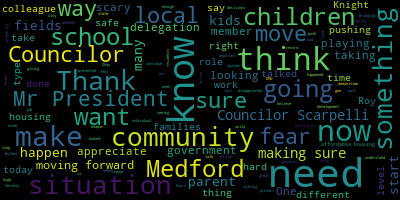
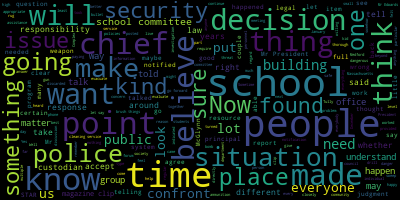

AI-generated transcript of Medford City Council 02/20/18
English | español | português | 中国人 | kreyol ayisyen | tiếng việt | ខ្មែរ | русский | عربي | 한국인
Back to all transcripts
Heatmap of speakers
[Clerk]: Councilor Falco. Councilor Knight. Present. Councilor Laura Kern. Present. Councilor Marks. Present. Councilor Scarpelli. Present. President Caraviello.
[Caraviello]: Presence, please rise and salute the flag. I pledge allegiance to the flag of the United States of America and to the Republic for which it stands, one nation, under God, indivisible, with liberty and justice for all. Before we start the meeting tonight, I know I spoke to a bunch of the press before. City Council rules state if you want to tape, if you want a video, please respect our rules, which are the middle window to the middle window and around the back. Please do not come up here and have your iPhones in people's faces. So if you want to tape, we don't have a problem with anybody taping. Just respect the rules and tape within the certain parameters that we have. Thank you. Motions, orders, and resolutions. 18-090 offered by Councilor Scarpelli. Be it resolved that the Office of Community Development forward the Medford City Council an explanation of programs, policies, and procedures currently in place. to ensure inclusionary housing in the city of Medford. Councilor Scarpelli.
[Scarpelli]: Thank you, Mr. President. First of all, I'm talking to the chair of the subcommittee on zoning and ordinances. I know that they've been drafting up a few of the ideas and presentations of what we're looking for moving forward with development. One of the biggest concerns that we hear now is the lack of housing and the lack of the type of housing that makes Medford the community that Medford is, which is housing for families. And I think that looking into the rules and the policies that we need to jump in a little bit deeper in seeing what we're doing to make Medford continue to thrive as a community of families and looking to possibly increasing our affordable housing to what is acceptable in our community. I know we're still at, I believe, 10%, but I think it's something that needs to be looked at. Another piece that's alarming, you can see it in our community next door, they're having huge concerns with residents there that were accepted into the affordable housing units in different condominiums and now are being told by the developers that are there that they now need to move out because of the popularity of of selling those condos as individual units and they're being asked to leave and given a mere $1,000 just to move out. So I think it's important that before I shouldn't say this before, but it's hitting us now. I think we need to take a more active role moving forward and ensuring that what we're doing to protect our residents here in Medford with our added development and how we're looking at affordable housing is presented in a way that we hold the values of our families in our community. So with that, I appreciate the time, Mr. President. Thank you, Councilor Scarpelli. Councilor Knight.
[Knight]: Mr. President, thank you very much. I think Councilor Scarpelli has got great timing. Just a couple of weeks ago, our zoning subcommittee met under the direction of Chairman Falco. And one of the topics that we discussed in that meeting was inclusionary housing and inclusionary zoning ordinance, Mr. President. And I think it's the time right now is to really address the issue that we have here in the city of Medford or affordable housing or the lack thereof. And one of the focuses that we've had is obviously meeting the threshold that's established by the state of 10%, but also retaining and replacing the expiring new stock of affordable housing units in the community. This is something that I wholeheartedly support. I thank Councilor Scarpelli for bringing it forward, and I look forward to working with him towards a finished product.
[Caraviello]: Move approval. Thank you, Councilor Naife. On the motion by Councilor Scarpelli, seconded by Councilor Naife. Mr. President. Councilor Marks.
[Marks]: I would just add that where the CPA now is in effect in the community, and one of the options for the CPA money that's available is affordable housing, that that also be looked at, Mr. President, to see what funding is available to assist in low to moderate and affordable housing within our community.
[Caraviello]: Thank you, Councilor Marks. On the motion by Councilor Scarpelli, seconded by Councilor Knight, all those in favor? Aye. Motion passes. 18-091, offered by Councilor Scarpelli, be it resolved with the upcoming spring youth sports season starting in April, that the DPW director and city administration report back to the city council on the steps being taken to prepare our playing fields for all youth organizations.
[Scarpelli]: Councilor Scarpelli. Again, thank you, Mr. President. This came about with conversations indirectly with the new director of recreation, members of the park board and members of our youth organization and also my background in working with facilities management and playing fields and knowing what we're doing in our community where I work. and preparing our playing fields. One thing that we know that our DPW is drastically understaffed and I want to make sure that as the weather, if the weather continues the way it's going now, we might be playing at the beginning of March in a few weeks, hopefully so. But we need our playing fields in a position where our children can play in a safe environment and making sure that we're giving, making sure the city administration is preparing those fields and giving our DPW and parks department what they need to make sure that those fields are under, um, uh, supervised and make sure that they're, they're, they're, um, planned accordingly moving forward as we get closer to the season. Thank you. Councilor Scarpelli. Councilor Knife.
[Knight]: Mr. President, thank you very much. I'd like to amend the paper with a B paper and request that the administration report back to the council. What the process is for permitting fields at this point in time, Mr. President, usually it goes before the parks board. The parks board meets once a month when they have a quorum, and then permits are issued. And I don't think it's the most effective or efficient process. Here we have a recreation department with a budget of $315,000 annually that hopefully will be up and running sometime soon. And the way that we're permitting our fields I don't think is going to be conducive to the best use and the best possible practices that we can do at the municipal level, Mr. President. So I'm asking that the administration conduct a review of the permitting process for their fields and provide recommendations as to how we can improve that to maybe a weekly permitting process as opposed to a monthly permitting process. Thank you, Councilor Knight.
[Falco]: Councilor Falco. Thank you, Mr. President. I want to thank Councilor Scarpelli for bringing this forward tonight. This is an important issue, but if I could also amend the resolution to make sure that we inspect all the park equipment in our top lots. and all the play structures, just to make sure everything's safe, especially after the winter and the cold weather when things rust and things crack and break and whatnot. So if we could have those inspected as well. Thank you.
[Caraviello]: Councilor Lungo-Koehn.
[Lungo-Koehn]: Councilor Falco stole exactly what I was going to say. I just think when you see the baseball and softball start, you also see the younger brothers and sisters at the tot lots. And that's something that we always get reports come April, the swing's broken. bar is missing on the, you know, monkey bars. So if we could just get ahead of that situation so that we, all our children can get on those taut lots and have fun while their siblings are out swinging the bat. Thank you.
[Caraviello]: Thank you. Councilor Marks. Thank you. On the motion by Councilor Scarpelli, seconded by Councilor Falco. All those in favor. Motion passes. Petitions, presentations, and similar matters. 18092 petition for convictual license by Justin Howard. 51 Bow Street, Stoneham. 02180 for B-Boys in the Morning. Doing business as Jim's Market. Councilor Scarpelli.
[Scarpelli]: There's a petition here this evening, if you can come on up. Name and address of the record, please.
[Caraviello]: And you are changing ownership, or? Changing ownership. Changing ownership.
[Scarpelli]: Okay, Justin, the hours, it seems like the hours are gonna stay the same, and I know you provide a valuable resource to that neighborhood, especially to my son, so I appreciate that. But it seems like everything is in order, Mr. President. I move to accept this paper.
[Caraviello]: On the motion.
[Scarpelli]: Councilor Dello Russo.
[Dello Russo]: As a third generation business owner in this community, I'm delighted to see that you are taking on your family's business as well. Congratulations, best of luck to you. Not only do you provide a great service to our community, but to the region. As you know, and as people should know, people come from all over to eat your stuff. Thanks.
[Knight]: Thank you. Councilor Nice. Mr. President, thank you very much. I just want to congratulate Justin on taking over the family business. We've seen his father in there and grandfather Paul before that, one of the great basketball players of Carpark history and Carpark folklore. Justin, same type of business, same type of, just a new name? Just a new name. All right, excellent. Well, I wish you the best of luck and congratulations.
[Caraviello]: Thank you. On the motion by Councilor Scarpelli, seconded by Councilor Knight. All those in favor?
[Belson]: Aye.
[Caraviello]: Motion passes, congratulations. Keep making those b-boys. Thank you. Committee reports.
[Clerk]: Councilor Marks, do you have a committee report there?
[Caraviello]: Councilor Falco, do you have a committee report to send out tonight?
[Falco]: Yes I do, Mr. President, thank you. We had a subcommittee on zoning on February 6th, 2018 at 6 p.m. And the members of this subcommittee are myself, Councilor Knight, and Councilor Lungo-Koehn. The purpose of the meeting was to review all papers assigned to the subcommittee of zoning and ordinances and to review zoning. So at the beginning of this term, Mr. President, you decided to split these former zoning and ordinance subcommittee to two separate subcommittees. One was zoning and one is ordinance. So what we did is we actually just went through the papers that were in committee and we moved Papers 16555, 16660, 16705, 17542, 17094, 17321, and 17320 to the subcommittee on ordinances. Papers 16-359, 16-338. 16, 6, 2, 6, and 16, 6, 6, 6 are staying in the zoning subcommittee. Uh, we also, I talked about, um, inclusionary housing and mixed use housing and the committee members are going to be doing some research, uh, or have been doing research over the past couple of weeks, uh, to, um, to present, uh, at a meeting, um, next week.
[Caraviello]: Thank you. Councilor Knight.
[Knight]: President, I move for adoption of the committee report.
[Caraviello]: Thank you, Councilor Knight. On the motion by Councilor Falco, seconded by Councilor Knight. All those in favor? Aye. Motion passes. Motion to take papers in the hands of the clerk by Councilor Knight, seconded by Councilor Scarpelli. All those in favor? Aye. Motion passes. Offered by Councilor Knight and Councilor Scarpelli. Be it so resolved that the city administration issue an RFP for the purchase of securing an independent security expert to perform a safety assessment of all public buildings in the city of Medford. Councilor Knight.
[Knight]: Mr. President, thank you very much. With a recent school place shooting taking place, Councilor Scarpelli and I were having a conversation about the tragic situations that's happened in America here when it comes to gun control. And one of the questions that came up was, are we doing enough in our public buildings to keep our employees safe? Then this evening when we got here, it's been brought to my attention, Mr. President, that there was a little bit of a situation in our public schools. over the past week or so, month or so, I should say, that's been brought to our attention. So with that being said, Mr. President, I move for approval on the underlying resolution. I'm sure there are many individuals in the audience and they would like to come up and speak on the topic of what happened at our schools today. We can keep them as separate issues and open that up to public participation and move for approval on the paper. And let me-.
[Scarpelli]: Councilor Scarpelli. Thank you, Mr. President, Councilor Knight for bringing that up. I know that As we're talking about such a serious situation, part of our discussion was the involvement of local politics and local municipalities to get involved, and really now pushing our state delegation to bring on to Washington what we think is something that needs to start at the local level, because we're seeing major major catastrophic situations not being addressed by our brothers and sisters in Capitol Hill. So I know that the President has made some moves today, but I think that we need to now start as a local government pushing our state delegation to making sure that they're presenting our views here in Medford that we can't stand for this type of violence. And say what you want about freedom of having guns, but there's a severe issue that's going on right now. And I think that the city of Medford should take ownership and start taking the lead that we can now push on to press legislation to change our gun laws in this country and making sure that the way people can purchase firearms are looked into in a more drastic, dire way because what happened this past week and what's happened for the last few years and so on, It needs to stop. It needs to stop today. And we need to take an active role as local government that if our senior delegation is not taking that step, I think we need, as a voice of Metro, to now start pushing that along to our government, our delegation in Washington. So I hope that our, my colleagues, support that and move forward with it. Thank you. Thank you. Councilor Lungo-Koehn.
[Lungo-Koehn]: Thank you, President Caraviello. If you could first just please read the resolve one more time.
[Caraviello]: Be it resolved that the city administration issue an RFP for the purpose of securing an independent security expert to perform a safety assessment on all public buildings in the city of Medford.
[Lungo-Koehn]: Thank you, yes, I think that's the least that needs to be done at this point in the city. Move approval.
[Caraviello]: On the motion by Councilor Nigh, seconded by Councilor Scarpelli. All those in favor? Motion passes. Councilor Lococo.
[Lungo-Koehn]: Thank you, President Caraviello. I believe we have the chief of police here tonight, and I just want to thank him for coming. I know that a number of things have transpired over the last several days and a couple months, and I know that it's under an active investigation, and what I want to say is, since the police department has found out about this, on Friday, there has been an active investigation, and I'm really thankful for what the chief and the detectives have done so far. I don't know what can be said tonight, but I think there's a lot of unanswered questions, and if the chief could tell us what he can, I think that would be important for the public and the parents and the staff of every school within this city. So I'll just stop there. Thank you.
[Caraviello]: Thank you.
[Sacco]: Chief, name and address of the record, please. Leo A. Sacco, Jr., Police Chief, City of Medford. I live at 227 Elm Street in Medford. I just wanted to address, if I could, Mr. President, through you, the last resolution. I know I didn't move quick enough on the vote. I just want to let you know that we're working with Ann Marie Irwin on a grant that the state may be able to provide. I have 16 officers that have been trained as critical response team. They were in the process of going to all the municipal buildings, doing a threat assessment on the municipal buildings. I'd just be very concerned that If we're fortunate enough to be awarded the funding, that would be traveling in parallel paths. So we may be duplicating the efforts if the money could be used in another manner. I'm certainly willing to work with any consultant, but I also know sometimes the people who know the buildings the best are the people who work in them every day. And our officers know what goes on in a lot of those buildings. and they work well with all of the participants. I mean, they've already started. They've spoken to a group of people at the library. They've started by talking with a group of people here at City Hall. We need to do more work in the schools, but we've done many years of work in the schools up to this point. So I just put that out there so that you know. I know that Anne-Marie Irwin and the mayor worked very hard in putting this together. Lieutenant Paul Covino put together the grant proposal, and we expect to hear shortly. And I think it will be looked on favorably in light of what's going on around the world. So I just want to put that out there so that you're aware that we're not sitting back. We just don't have the normal resources in our operating budget to do it on a regular basis. But if we're fortunate enough to get the grant, it'll be done. Thank you, Chief. Thanks, Chief. I, I probably should defer to the superintendent first, uh, regarding the incident that took place at, at, uh, the McGlynn school. But I certainly will follow up with any questions. Any of the council members of the public may have, uh, right afterwards. But I think it's important maybe that the superintendent go first and, and tell the story as he knows it. Thank you. Chief. Thank you.
[Caraviello]: Good evening, Mr. Superintendent. Name and address of the record, please.
[Belson]: President Roy Bellson, superintendent of schools. 2500 Mystic Valley Parkway, Medford, Massachusetts. Mr. President, members of the council. Historically, the chief of police and the school system have worked very closely together on all security matters. In 1999, when Columbine hit, the chief and I were part of a group that formed the STARS program, School Threat Assessment and Response System. It was part of NMLEC, the Northeast Middlesex Law Enforcement Council. And since that time, we've worked very closely together to put together all kinds of security measures for our schools. And we communicate very regularly with each other. When we think there's a danger, we talk and we take action. Recently, Back in and around December 28th or 29th, I'm not 100% sure of that date, a cleaning service that's employed by the public schools at the McGlynn Complex, middle school and elementary, found in the rear of the Veterans Memorial Auditorium, in the back row under a seat, a magazine clip that contained some ammunition in it. It is unclear how much ammunition was in it. We know that it could have been, based on the chief's estimate, at least three to four rounds, but not necessarily a full clip. We can't tell that because we don't have the magazine. But from the picture that we were able to see, that's a reasonable estimate at this point in time. The cleaning service turned it over to a custodian at the building. The custodian brought the magazine clip to the principal's office at the McGlynn Middle, and put it on a shelf. That's the report that I have. Mr. President, just a point of information.
[Marks]: Councilor Marks. And I hate to interrupt you, Mr. Superintendent. It'd be helpful if you can point out timelines. When was it brought to the principal's office as you make your presentation? Happy to do that. Thank you.
[Belson]: So, School went on Christmas break on the 22nd of December. To the best of our knowledge, at least at this point, we're checking on a couple of other things. Only one entity used the McGlynn during that weekend for a holiday service. The cleaning service has informed us that they did a thorough cleaning of the facility, including the auditorium, which they would typically do on Fridays, and found nothing at that time. The service was over sometime on Sunday, and the holiday commenced on Monday. Sometime around the 28th, the cleaning service went back into the theater, or the 29th, I'm not 100% sure. and they found under the seat in the back row this magazine clip that I just described. It was turned over to the custodian, in-house custodian, whose name is Daniel Tully. Mr. Tully took that magazine clip, according to his report, and put it in the principal's office, Mr. Edwards' office, and he said on the shelf, along with some other things that were there, Mr. Edwards has told us that he came into his office in and around the 30th of December to do some work and to do some cleaning, at which point he alleges that he cleared away some things that were unnecessary and may have, he doesn't know, may have discarded the magazine clip.
[Caraviello]: Point of information, Councilor Lungo-Koehn.
[Lungo-Koehn]: Thank you, President Caraviello. I just ask that, I know that's Mr. Edwards' story today. I just also ask that Mr. Edwards' other three stories be told as well.
[Belson]: Well, I'm telling you what I know.
[Lungo-Koehn]: But when you found out in January, what did you know? Was that the same story? I'm telling you what I know.
[Belson]: And if you have other stories, I'll be happy to listen to them. But I'm telling you my latest.
[Lungo-Koehn]: So you're going by the latest story, but what you were told in January, you're just going to go with the latest?
[Belson]: I'm telling you what I know. If I had a different story, I would say that also. I'm telling you what I know.
[Lungo-Koehn]: I've heard four stories so far.
[Belson]: I understand, but you have more information than I have then.
[Lungo-Koehn]: Thank you.
[Belson]: So Mr. Edwards told me that he cleaned his office and he may have discarded the item. Now, if you know what a magazine clip looks like, it's about this long. It's black. Has some appearances that looks like it could be a small cell phone, small remote control, small other electronic device.
[Caraviello]: Excuse me. Excuse me. We have one speaker speaking. You want to speak? You can speak after the speaker is done. Please don't interrupt or mock anybody. Thank you.
[Belson]: I don't know what other items he had there and how it could have been confused. But that's the story that he provided to me. Now, we did not have any evidence of a magazine clip available to us. Sometime in early January, Mr. Tully came to my office during his shift and told me about what he had found. I asked him routine questions about where he found it, who was there, Those kinds of things. And he couldn't really fill in much more except the fact that he found it and put that in Mr. Edwards' office. We checked with different other people. And at this point in time, I'm unable to identify where the chain of custody took place after Mr. Edwards allegedly discarded the item, or did not see it. Now, subsequent to that, we try to make some decision as to whether we felt this rose to the level of a reportable incident. I'm told that Officer Ricciardi, who is the school resource officer, was also told at some point in early January. That's what I'm told. I want to be sure that I'm not 100% sure of that. At the time, we felt that it was an isolated incident, that it was something that was not dangerous in the sense because it wasn't a firearm. Bullets don't fire themselves, not a weapon. No weapon was found. we should take our time and not raise anxiety. However, subsequent to that, in conversations that I've had with people in recent times, indicates to me that even though we did not feel it presented a clear danger, that other people do, and that they would have preferred that we made a full report to the chief of police. And as I indicated earlier, the chief and I talk all the time. I have no problem telling the chief anything. And we've talked about a lot of difficult situations over the years. We don't hide things. But a judgment was made. And that judgment said, we don't see this as dangerous at this point in time. So therefore, I take responsibility for not reporting it to the chief. But I did so, I believe, in good conscience. I believe that it was something that I needed to know more about before I raised it or elevated it. Over the years, I have reported any number of things the chief can verify to him that I thought were dangerous. I don't believe that Mr. Edwards would have any motive for not turning it in. After all, he wasn't there on the weekend, didn't belong to him. He has turned in many items, and Officer Ricciardi has indicated this, to him on multiple occasions. So I don't believe he had any reason not to turn it in if he knew he had it. At this point in time, since it has become an issue, especially in light of what's taken place in other communities around the country. We have authorized a full sweep today, full sweep of the McGlynn Complex, which was conducted by Medford Police, Somerville Police, Everett Police, and Arlington Police with dogs that are weapons and drug trained. and we found no trace of weapons, ammunition, or drugs in the complex. I'm comfortable that that building is clear. We have also initiated, in order to help the public feel comfortable, a sweep of all school buildings over the next few days to ensure that there is nothing there that would be of concern. We are also planning this week to put together material, media, and others to talk to the public about the nature of school security, what we have in place, without getting into sensitive items, but what we have in place, and also to address this issue. I have communicated with the Teachers Association President, Charlene Douglas, and It's possible that I will meet with the McGlynn faculty on Monday afternoon to answer any questions they have. We believe that our schools are safe. We believe that we do more than most school systems do to keep our schools safe. We believe that we will continue to review and upgrade what we have if we find that there is room here to do so. and we believe that we can go forward recognizing that the decision that I made with others in my employee needs to be upgraded in the future and that a lesson learned. I'm happy to take any questions.
[Marks]: Point of information, Councilor Marks. Just if I could, Mr. Superintendent, two points.
[Belson]: Yes.
[Marks]: The decision that was made that this wasn't a serious incident Who else was in consultation? Was the chief of police involved in this conversation?
[Belson]: No, the chief of police was not involved. I did talk to the principal. I did talk to the custodian. I did talk to a couple of other people that I work with. And in my opinion, at that particular point in time, Officer Ricciardi did come in at some point, came to the conclusion that it was not something that warranted a full investigation at this point.
[Marks]: Okay, and my other point was, at the beginning of your speech, you mentioned that the clip, the magazine clip, potentially had three to four bullets, which is pretty specific to me. And at any point, did you receive a picture of this, even though the principal stated he did not have the clip, or doesn't recall ever seeing the clip? At what point did you see the clip itself?
[Belson]: I saw the picture last night. And the clip is, if you look at the clip, you can see one bullet at the top, and then there are holes on the side. The chief can describe this better than I can. But he can tell how many rounds might be in it. But the person's hand covered most of it, holding it. So he couldn't tell beyond a certain point whether there were additional bullets beyond the 3 to 4 that he was able to identify.
[Marks]: So in your opinion, you just mentioned that you want to make the public feel comfortable. And in your opinion, finding a magazine clip in a K through 8 school doesn't rise to the nature of seriousness to notify local police department, notify faculty, notify parents, notify students that there is an investigation that is gonna take place? You didn't even feel it was at that level where you notify people in the community?
[Belson]: We have notified people on all kinds of situations in the past.
[Marks]: That's debatable. We've had a bomb incident, Mr. Superintendent, that your own school committee created a policy where serious incidents had to be reported immediately by the administration, which clearly wasn't followed in this case.
[Belson]: We've reported multiple situations over the years of all kinds. Certainly, you know, one can debate whether this rose to that level But given the consensus that I have- All due respect, there's no debate.
[Marks]: There's no debate, Mr. Superintendent, when you find a magazine, Mr. Superintendent, that there is a concern within a building. There's no debate. I don't see how you can say that it didn't rise to that particular level. I would question your judgment if you honestly believe that that doesn't rise to a level where you should be notifying at least public safety officials. And I say with all due respect, Mr. Superintendent, because we've known each other for a lot of years, but I really don't see how that doesn't rise to a level in this day and age that people should be notified, especially after the incidences that we've had in this community where there's been a lack of notification. I thought we were past that stage and the best policy is 100% notification. and then let the administrators and the police do what they have to do, Mr. Superintendent. So I'd like to clarify that. Thank you, counsel.
[Caraviello]: That was the point of information. Let the superintendent finish and we will have time. We let the superintendent finish and we'll have time to answer questions.
[Belson]: I'd like to respond to the notification issue. If you're speaking about a couple of years ago when there was a bomb threat at the high school, the issue wasn't, notification, the issue was timing of the notification, whether it was soon enough. And the committee decided to make it a little bit faster. We notified the public about that. We just didn't do it immediately afterwards. We did it a few hours later. We felt that more people would be home. But the committee felt differently, and we modified. Now as far as this situation goes, it happened during a school vacation. It happened when no students were in the building. It didn't happen where there was a firearm anywhere near it. And there was a plausible thought as to how it may have gotten there. Now, since that time, we're all aware of what happened in Florida. And I'm sure that there's a heightened feeling that somehow that is the same situation. It's not. However, Massachusetts has tremendous gun laws, tremendous gun laws. We can't buy what that individual bought in Florida, in Massachusetts. You can't do that. From our standpoint, from my standpoint, I made a decision. In that decision, we have back and forth, and it was determined that that was the wrong decision. I accept responsibility for it, and we'll go forward from that. but I made the decision in good faith. Sometimes, you know, we make decisions that people don't agree on. If I thought there was something live, if I thought that students were in the building, if I thought there was a weapon anywhere near the place, my decision would have been different. So I stand on that for the time being. I apologize to anyone who may feel that I did the wrong thing, but I certainly didn't do it with malintent or reason to let's say obfuscate any of the information from the public. I'll stand on that.
[Caraviello]: Thank you. Councilor Lungo-Koehn.
[Lungo-Koehn]: Thank you, President Caraviello. One question I have is with regards to, you said you authorized the sweep today and that was done. I'm thankful for that. I'm thankful that there's going to be sweeps within all of our schools in this city. I guess my question goes to why didn't you think this was necessary when you found out in January?
[Belson]: Why didn't I think it was necessary in January?
[Lungo-Koehn]: A sweep of the school. That could have been there for weeks, and it was just found on the 28th.
[Belson]: No, we don't think that's the case, because the cleaning service that found it cleans that area regularly and did not see it. It's clear to me that it landed there very recently in proximity to the time that it was found.
[Lungo-Koehn]: And what's clear to me is that you mentioned there was a plausible reason why it was there. And I just want to point out there's hundreds of reasons how it could have got there. And that makes the parents and the staff extremely uncomfortable with how this was handled. I question many people's judgment on this. And I guess a question now that a lot of people have, and there's a lot of questions that people have, is especially personnel that work there, because my phone has gone off the hook since the staff has been notified as of like 2 p.m. today, they don't feel comfortable with the judgment that was made obviously by you, but by the principal of that school. So I am under the impression he threw it away, and that's what I was told. And if you knew in January, I question what he told you then. you know, why it wasn't reported to the police. So, I mean, I'm not gonna say too much. I do know some of the results of the investigation that the police are working on, but what changes are gonna be made in staff before Monday?
[Belson]: I'm not gonna evaluate a principal in this forum. Let's understand that. I will take actions on personnel matters as we go forward into the spring, but I'm not gonna evaluate a person in this forum. That's not an appropriate way to do it. Individuals are entitled to due process. They're entitled to the protections of the law. So the reality is that we will be reviewing personnel. We will be reviewing policies and practices. We will be ramping up some of our drills. I've also told the principals that the week we come back, we're going to run a special drill I'm a little concerned about it in some ways because I don't want to heighten in the students' minds that this is somehow an emergency. But on the other hand, I think we should at least do one more drill at this point in time. It might help the community understand that we're prepared. But I think for the most realities of this thing, we will evaluate personnel and situations and policies. The Medford School Committee is going to meet on Thursday night. I'm sure that I'll hear from them pretty directly about what they want. And we will follow that. And this judgment that I made won't happen again. It's just that simple.
[Lungo-Koehn]: Thank you. I think by not doing anything with administration, by the school committee not doing anything with the administration is poor judgment. And by our superintendent of schools, who the people want to see do the right thing and to wait till the spring where parents and personnel at that school are extremely uncomfortable. I think it's sending the wrong message. I hope the school committee does what they have to do on Thursday night, because this is something that cannot be repeated, and multiple things need to happen, including, I'm just beside myself, We have not done lockdown drills in our schools this year. I think we did them once, and they've only been done one time last year. You also have the staff who is extremely concerned because they've never done evacuation drills from cafeterias or auditoriums. There are personnel who are scared to take their children into the auditorium. I was there with my family a couple weeks ago, and I mean, this affects hundreds of people that are at that school. And this affects our whole community. And it's something that really, this cannot be tolerated. And I'm, again, thankful for the police and their investigation. And I hope that all the questions that are being asked on social media, and I'm sure are going to be asked tonight, I hope they're answered. And I know that once the investigation is done, I know they will be answered. I'm not going to answer them, although I know a lot of the answers, because the investigation is active. But people, every single parent, and every single personnel at that school deserves every answer eventually. And the sooner, the better.
[Falco]: Thank you.
[Caraviello]: Councilor Falco?
[Falco]: Thank you, Mr. President. Thank you, Mr. Superintendent. Thank you, Chief Sacco. I find everything to be very alarming. As a father of three kids in the Medford Public Schools, I always feel that my kids are safe. And now I see something like this today, and I feel they're safe, but I have concerns. And I think they're very valid concerns. You know, as far as, you know, when we notify police about an incident like this, do we have a clear policy as to when? I mean, to me, there should be a clear, you know, I watch the commercials, I hear it on the radio, I see it on TV. See something, say something. I tell my kids that. You know, and I think it's a good theory to go by. Because I think, you know, we need to, keep law enforcement active and engaged in what's going on. To me, this is a clear case where see something, say something should have been the appropriate choice. Do we have a clear policy that says in this situation, there's some sort of ammunition and I'm no gun expert, but there's some sort of weapon that we contact the police.
[Belson]: So Councilor, you've been on the school committee.
[Falco]: Yes, I have.
[Belson]: And you've received multiple phone calls or letters from me when situations have happened over the years. And I believe Councilor Scarpelli, you have also. Anyone who's on the school committee knows that it's a regular practice, and we do it. There are some things that happen in a school. It could be a kid fight, something else like that, or in the backyard, or an injury, or something like that, that you just can't take everything that happens every day and send it out. But having said that, this situation, in retrospect, was one that deserved notification. And the judgment that I made was not the best judgment at this point in time. I accept that.
[Falco]: What I would like to see is I would like to see the school committee work on a clear policy.
[Belson]: The school committee wants to be notified, Mr. Falco. I understand that. They want to be notified. on situations that are serious and I should have notified them on this one.
[Falco]: But I think the parents as well, because if you're going to notify the school committee, that's going to go out to the general public. So the general public should hear from our school leader, the superintendent saying, this is a concern. This is what's been found. This is what we think is happening. I mean, getting input from the chief as well. I think, you know, You know, I understand that there are probably certain issues that are minor, that maybe not everyone needs to know about, if there's a fight in the playground or something like that. But something like this, where there's a piece of ammunition that's found, you know, within the school building, that that's a concern. And that's a concern that many people have here tonight. There's many people that are watching at home that have this concern. And I know all of us behind this rail have the same concern.
[Belson]: I understand. And I just want to say that, you know, Normally, I tell the chief virtually everything because we have very good communication and have for many, many years. In this instance, I didn't do it. I failed in that regard. I accept that responsibility. But typically, the school committee does want to know. And I think it's clear to me that I should have informed them. But I don't believe and I think this is the key point that needs to be made and needs to be heard throughout the community. I don't believe our schools are unsafe. I don't believe that our children are in danger. I believe that the school committee, the council, by paying money for cameras and other things like that, have provided quite a bit. The police department has worked very closely with us, with resource officers, with all kinds of things. We work closely with the district attorney to determine what's happening on the street on a regular basis. There is a lot going on that heads off issues in our schools. If I made a mistake this time, not if I made, I made a mistake this time, I accept that responsibility. But I believe enough's in place. And I believe that if we, we dedicate ourselves to it, we'll be fine. I believe our schools are safe as any school in the Commonwealth. But having said that, there are no guarantees. There are no guarantees that I can give you or anyone of sound mind could give you. because we live in a society that is a little violent. We live in a society that does do unusual things at times, and we do have a lot of mental health out there, and there are guns on the street. And that requires even more, more from the people that make decisions, make decisions about these issues and these policies. But in this instance, I accept responsibility.
[Falco]: Mr. Superintendent, I would honestly like to see you, the police chief Sacco, and the the mayor and the school committee come together and formulate a policy as to, you know, when, you know, to actually put a policy in place, when should the police be contacted about an issue like this? Because I think there needs to be a clear definition, in my opinion. I mean, I'd like to see that.
[Belson]: I will put that on our calendar for Thursday evening.
[Falco]: Thank you. Now, the Thursday night meeting, which I know I've received a ton of calls about, I believe that's going to be at the high school.
[Belson]: Yes.
[Falco]: I would respectfully ask that that be held here. I think it's, you know, from being a former school committee member, having meetings at the high school, the acoustics are really, they're not great. I think you, my guess is you're gonna have a lot of people at this meeting. I think that it's better situated to be here. You have microphones, you have, people will be able to actually hear the dialogue. This is an important topic. It's an important issue that people wanna know about. They wanna know what happened, when it happened. They wanna see a timeline. I think that if you try to have a meeting like that in a library or the superintendent's conference room, I really think that's probably not the best way to go. I think having it here at Chambers is the best venue to have the meeting. I think it seats more people. And I think, like I said, the acoustics are much better. I've been to budget meetings up at the library. And if you're sitting in the back, you really have no idea what's going on up at the front, just because the acoustics are not great.
[Belson]: So let me ask a technical question of the clerk, if I may, through the chair. We've posted a meeting, Mr. Clerk. We've posted it at the high school. Can we make a modification if the chair agrees to make that modification under the open meeting law?
[Clerk]: Right now, the city has only accepted, number one, is the clerk's posting board as the primary posting board, and two, is the 24-hour posting board which is the police station. So we have not accepted, but the website today is a posting board. That's not to say that other cities in town haven't done that. It's probably something we should look at now.
[Belson]: So I'll communicate with your office tomorrow morning, and you can tell me whether we fall within the guidelines.
[Falco]: Yeah.
[Belson]: OK? Yeah.
[Falco]: Thank you, Mr. Superintendent. With regard to the sweep of the schools, I'm sorry. With regard to the sweep, uh, regarding the other schools. Yes. Uh, now you said that will be done in the near future. Is that going to be done on the weekends? Uh, just because, I mean, we're asking that they begin tomorrow and they start doing it all. So we sweeping schools while kids are in the schools.
[Belson]: Not at this point in time.
[Falco]: No, they're not there. I'm sorry. I'm sorry. It's fake. I apologize. I apologize. I should know that my kids are very excited about that. Um, with regard to, uh, Now, with regard to our current situation, with our current protocols, we lock down the schools. We lock down the schools currently. If there's an issue and the schools go down, it's a lockdown. I know we've talked about this before. I've received a number of calls with regard to people asking about why aren't we using ALICE, which is a program that's well-known. Police Chief Sacco, I believe you know about that. And I believe there are members of the police force that are trained in the ALICE program. Is that something that we are potentially looking at moving towards? Is that something that you think would be beneficial? I mean, I know there's a lot that goes into it. But if you could weigh in on that a little bit, because I know I've received a number of questions about that.
[Sacco]: It's a program that's been around for quite a while. And it seems like every day another school district is adopting it. It just gives the school system, the staff, and students options to pick from. I'm a proponent of it. I've seen it in action in many communities. It's something that obviously the superintendent and the school committee would have to approve, but you just don't switch and have it work right away. You have to do a lot of training and educating, uh, the staff and faculty and students and probably start at the high school and go to the middle school and then the elementary school. So it's something that would take a little bit of time, but I'm sure that, uh, Like I said, it's going like wildfire right now. It's spread. Many of the districts in the state have adopted the ALICE program.
[Falco]: I've done a little bit of research myself on it. And if you go online, there's videos. I think the City of Waltham has a video on it as well. And they do a good job of basically describing what it is and what you do. And they walk you through the program. From what I can see, it seems like it's a good program. I think it's something that we should really look at. If it's something that you support, I really think that we should probably be moving in that direction. You're our expert with regards to law enforcement, and I think that- I don't know about expert, but- But I do feel that you really are our expert when it comes to law enforcement. You talk to people in other districts, and I know Superintendent Belson, you do as well, but I think that this is something that In my opinion, this is something that the school committee should really consider. Looking into Alice, I know it doesn't happen overnight, but I think maybe we should look into it and probably by the fall, by the next school year, it's something that we should implement. So if we could, and I'm not sure if you could possibly add that to your agenda for Thursday night, but I think it's something that should be considered.
[Sacco]: If I may, just before the superintendent speaks on this, I think it's important that we at least do the training in the schools. Whether it be ALICE or some other program, or we create a local program, adopting the best practices from all the other programs that are out there. I think we need to do that and we have people ready to go. We have at least three instructors. at this point. And just so that everyone knows what ALICE stands for, it's alert, lockdown, inform, it's confront or combat, and evacuate. So I know that there's the questionable component there, that option of confronting the bad guy, but it works. And if you're faced with the other alternative, you have to do something. And that would be the option. This program gives you options. It's not just a lockdown and hide under the tables and shut the lights and put the red card out or the green card out. This gives you options. If you have a means of escape, you escape. And like I said, I've seen it work. I've worked with a lot of people in many police departments that actually teach their whole school district. And it's, you know, there's some initial reluctance, but then it's overwhelmingly supported once it's in place.
[Belson]: So a comment on that. Of all the letters in ALICE, the only one we don't do is confront. Because everyone alerts people if there's something going on. Everyone locks down if they have to. Everyone informs mutual aid or assistance when they do it. And everyone tries to evacuate if they can. It's the confront part that becomes of concern. And the reason it's of concern Think about young kids, little kids. Should they be trying to confront? Are all teachers, are all staff physically able to confront? Will they try to confront? Can we mandate that they confront? There's a lot to this that needs to be thought about. And what age group do you start? And when do you start? It's really an active shooter program. It's not just a general program for bomb threats or things like that. It's a program. So there's a lot to it. In that regard, who confronts and in what way, and who's able to confront, not everybody is going to be willing to do that. So we have to think about it. Chief and I have talked about starting maybe with the older kids and the higher grade levels. There's some issues with it. But look, I am more than willing to have the discussion and to have an active give and take on this subject. But we need all the players who are going to be expected to step up to tell us whether they're prepared to confront. Now, the other day when the Parkland situation took place, if you remember the sequence, the individual pulled a fire alarm to get people to evacuate the setting and then was going to pick them off with his gun. I've heard many times, why don't we evacuate this? And I've told you in previous occasions that evacuation isn't always the best drill because the explosive or the sniper could be on the outside of the building, not just on the inside of the building. It's all situation-specific. And it needs to be talked about, more than willing to talk about it. Let's not just put out alphabet soup, ALICE, and say that's a cure-all. Happy to look at it. Happy to get people to talk about it. But it's got to be adopted and committed to by the people who are going to implement it, or else it's just another training program that will go nowhere.
[Falco]: Well, I mean, I think it's something that should be looked at. I think the school committee should seriously consider it, at least at the high school level, maybe even the middle school level. I understand there's concerns at the elementary school. I get that, but I think, especially if it's something, Chief, that you're a fan of, I would think that it's something that should be considered. I'd like to see that part of a future school committee meeting. I think it's something that they should look at. With regard to the McGlynn staff.
[Belson]: Yes.
[Falco]: Now, I believe you said you may possibly meet with them. Is that something that's going to happen? I mean, is there a demand there?
[Belson]: It's been offered to the president of the MTA. OK. And she hasn't confirmed it yet, but she thinks it's a good idea. But she has to confirm it.
[Falco]: OK. Well, I thank you for answering all my questions. That's all I have for now. Like I said, I'm a big fan of see something, say something. I think that should have been the first thing, the first approach that you should have taken. I thank you for your time. OK.
[Knight]: Mr. President, thank you very much, and Mr. Belson, thank you for being here. I appreciate your being so candid with the situation and accepting responsibility for what's going on. With that being said, when will the investigation be complete?
[Belson]: Well, that's a police investigation, so I leave that to the Chief to answer that one.
[Sacco]: As with any investigation, it's hard to give a timeline. I mean, the investigators are speaking with a number of individuals. I'd like to be able to tell you within a week, maybe two weeks tops, but it takes time and we don't know when someone starts to give us a story. We don't know what road it's going to take us down, so it may take a little bit longer. They made tremendous headway since it came to my attention on Friday through Councilor Lungo-Koehn. that they've worked on this and the pieces are coming together. Everybody's been cooperative? To date, yes.
[Knight]: Superintendent Belson, now we have the STARS program, and what would the normal reporting process be in the STARS program if a situation like this occurred?
[Belson]: STARS was set up to look at school threats, the acronym School Threat Assessment and Response System. So when a school threat is identified, or we believe it is identified, and we believe it requires additional resources above and beyond what we have, we would notify the STARS commanders. Chief Sacco once headed that group. I'm not sure who heads it now. We would notify them, and they would provide us with those resources. So let's say we needed a graphologist. They might have a graphologist. Let's say we needed a certain type of psychiatrist. They would help us with that. Let's say we needed a forensic help. There are certain police departments and entities in the state that have forensic, the bomb squads. They would coordinate the kind of specialized assistance that we need to make the appropriate threat assessment and then make the appropriate response. If we needed, unfortunately, a SWAT team, that would be the ultimate. But it's a coordinated response. And I want to make that point very clear. There's a lot of people out there selling products about, coordinating with schools and the like. There's a lot of money being made in the school security business right now. And part of it brings up the idea that we could have an uncoordinated response. And that's the last thing we wanted. The chief and I both agree that if we have a situation that requires mutual aid or specialized assistance, we want that coordinated. You may not know, but I think we will have said it many times, but maybe you don't remember. There are floor plans on the computers of the police cruisers. There are doors that are marked that people can go to. There's all kinds of pre-preparation in place for STARS to work and for our own police to respond strategically and specifically to areas which we believe require attention. What we don't want is we don't want what happened in 1992. Remember 1992?
[Knight]: I was there. I was there.
[Belson]: In 1992, there was a altercation at the high school. And at that time, people came from everywhere. Helicopters were flying over the building. People were coming in all different kinds of uniforms, not coordinating. And that only created more problems than it assisted in helping. So it's very important, and I thank the chief and his comrades at NMWEC for the work that they have put in to ensure that a response of that type through the STAR system is one that is coordinated, thorough, and strategic.
[Knight]: And Mr. Belson, if this incident had occurred when school was in session, what would the response have been?
[Belson]: Very different. Very different. If it occurred when students were there, would have been a full report and immediate response.
[Knight]: In terms of identifying failures in the reporting system, I think that this has been opened up as a failure in the reporting structure. And where's the biggest failure that you've identified thus far in terms of the reporting structure? Is it between the cleaning contact crack to giving it to the senior custodian, the senior custodian not reporting it to the principal appropriately?
[Belson]: I'm not going to blame anybody else. I knew about it. I have a relationship with the chief. I should have made the report.
[Knight]: And I guess the next question is, what are the next steps that we can hear from so that we can be assured that this isn't going to happen again?
[Belson]: The next step is to continue to fortify and to continue to assess. I expect to be in front of you in and around March 6. I know you're looking forward to seeing me again. Attempted humor. to get funding for the upgrade to all the security cameras that we've put in place. We have upgraded all of them so that they're now capable to withstand some of the weather issues that previously they weren't. They have better visibility. They have better ability to pan. And we think it's a distinct improvement over what we've been able to have in the past. So I'll be in front of you for that, too.
[Knight]: Do you have any knowledge as to whether or not the school committee is going to continue to allow rental opportunities to outside organizations in our schools? Is this something they're going to be looking at from a policy standpoint?
[Belson]: I think so. I think there are a lot of terrific groups that rent our schools. And every group from Cub Scouts to all kinds of groups all the way up rent our schools or use our schools in a meaningful way. This is an outlier situation. This is not something that's happened frequently. Maybe we didn't handle it. Maybe I didn't handle it well. But that doesn't mean we should deprive the community of the resources of the schools, which I think are very important to providing appropriate recreation and assistance. Look, shut down the pool, we just did it. You want to shut down the gymnasium? We can't do that. We can't live in fear.
[Knight]: No, and I'm not asking for that. I don't want to see a knee-jerk reaction to address an issue in the community that I think needs a long hard look. And I can certainly appreciate how candid you are this evening, and thank you for being here. That does it for my questions. Thank you very much.
[Caraviello]: Thank you, Councilor. Councilor Dello Russo.
[Dello Russo]: Thank you, Mr. President. Thank you, Superintendent Pelson, for coming down tonight to responding to the concerns as this became aware in the community. And also thank you for taking responsibility. That's a component of your leadership I'm grateful for. A number of things have been brought up by some of the Councilors that I'm concerned of. I was particularly concerned of, as Councilor Knight mentioned, a reassessment of or an examination of the groups that use our facilities. I know the Chief mentioned that this is an ongoing investigation and that's important. There's one piece to this. single out a person. I don't want to vilify anyone, Mr. Superintendent, but I can't imagine in my mind how one mislays something so important, critical, and apparently dangerous that's in a school building as bullets. a clip of bullets and I hope I am not asking for an answer and perhaps you can't answer that and perhaps you know right now, but I'm hoping sincerely that we get to the bottom of where these have gone and how that piece of evidence sort of has exited the scene and hope that something so grave as this is dealt with in a better way.
[Belson]: So I appreciate the observation. I can assure you that my conversations with certain individuals will be very direct and very thorough, and that decisions will be made about a lot of things in the next short period of time.
[Dello Russo]: Thank you, Mr. President.
[Marks]: Councilor Marks. Thank you, Mr. President. Mr. Superintendent, in my opinion, it's clear that if this wasn't brought to certain people's attention in the community, this would have never came out in public. That's my own feeling. And again, we can talk about best practices, we could talk about additional funding for cameras, we could talk about new policies and procedures, and all that can be negated by one bad judgment. All that, any policies and procedures in place can all be negated. And I think that's what happened. I do think we have policies and procedures in place that weren't followed. And I know you take responsibility now. You mentioned about coordinated and uncoordinated efforts. I would consider what took place an uncoordinated effort internally. Would you not?
[Belson]: I don't think it was a question of coordination. Not notifying.
[Marks]: I don't think that was full coordination, but clearly part of part of coordination is notification, correct?
[Belson]: Okay. I'll accept that.
[Marks]: My other point, and I'm not a Johnny come lately on the issue is year after year. I've been questioning you regarding the rentals of our school buildings, right? And year after year, we've had debates, many at this podium. And I'm not going to rehash all the different debates, but I do feel strongly, Mr. Superintendent, you promised me you'd look into this, that many of our buildings are rented out to outside organizations. that have no affiliation with this community. We do no background checks. We have no idea who are entering, exiting, what they're bringing into these buildings. And in my opinion, when it's mentioned to you, you kind of shrug it off and say, well, we can't crawl up and hide in a ball. We rent our buildings out. And I can appreciate that. But the safety and security of our children and our faculty should come first. And if it comes to telling a program that they're no longer welcome back in this community because we choose not to rent out our buildings to make an additional 25 or 30 grand a year, which is a pittance, to be quite honest with you, in the scheme of a city budget, to me would lend a lot more peace of mind to parents. We've had this discussion about the high school. After 3 o'clock, we don't have one security person on at the high school. After three o'clock, as you know, there's extracurricular activities, there's after school programs, and there's not one person at the high school that's there for security. I don't count custodians, I know you do, for security. I don't count having faculty around that they're security. And I think that's a real breach of a safe and secure building. And I just can't see why you can't see that, Mr. Superintendent. And again, it concerns me about a lack of judgment when it comes to having people. We don't know what they're bringing into these buildings. We really don't know. In this day and age, Mr. Superintendent, I think it's best to err on the side of safety. And I know you mentioned about Cub Scouts, and that's great. And we don't want to make Cub Scouts not come into our building. I'm talking about outside organizations that have no city affiliation, that you don't know who's going in there. Chief of Police doesn't know who's entering these buildings, and we don't know what they're doing inside these buildings, but they do have access to classrooms, to auditoriums, to cafeterias, and to a host of things within our building, and that's of grave concern, and something that no policy or procedure is going to cover. We have to take an internal approach. saying, is this what we really want out of our buildings? Is it worth the public safety? Is it worth the wear and tear? I don't believe so, Mr. Superintendent. And I don't think we could just shrug our shoulders year after year and say, you know what? We've had no incidences. We're doing fine. This could have been an incident. If you found some flour, sugar, and frosting underneath the seat in the auditorium, you would say they're baking a cake. Right? But you find a magazine with bullets, and you don't think there's any serious nature. That there's no affiliation. I really believe, Mr. Superintendent, that someone needs to be held accountable. Someone needs to be held. You don't want to discuss particular personnel matters, and I agree, this is not the forum to discuss it, but someone needs to be held accountable. How can you be cleaning your office the day after this took place? take a magazine off the shelf and say, oh, this doesn't look like my pocket pen or this doesn't, and discard it. How does that happen? Unless your office is a filthy mess. I don't understand how that happens. I really don't. And even if it does look like a cell phone, how many people throw cell phones out? I mean, I just don't understand. It seems to me the perfect, and I hate to use the words, the perfect coverup to something that should have been reported immediately. We're not here to alarm people, I agree with you, but having administrators, having faculty, having parents, having them make that decision whether this is serious or not, whether they want to send their kids to school, is up to them, Mr. Superintendent, and not up to you making an individual, standalone decision on whether you think it rises to an area of such seriousness that people should be aware of it. I really am very disappointed. I have to say, Mr. Superintendent, I know you're stepping down soon and I wish you well in your retirement, but honestly, I'm very disappointed in this. I'm very disappointed that it's taken seven weeks to come out. into the public and just barely come out, and only because I think people found out about it and raised awareness that it came out. Otherwise, I think it would have been brushed under the rug. And it would lead me to believe what else is being brushed under the rug that we should be aware of.
[Belson]: We don't brush things under the rug.
[Caraviello]: Excuse me, I'm not gonna tell you again with the comments, all right? Enough with the comments. Next time I'm gonna ask you to leave the room, all right? Give the respect to the people out there. You wanna come up here and speak, you can come up here and speak, all right? But have respect for the person who's at the podium. You'll get the same respect when you come up here. Thank you.
[Belson]: We don't brush things under the rug. But from time to time, we make decisions. That's what decision makers do. We make decisions. And if I've made a decision that didn't square with everyone else, then I accept responsibility for that. But we don't brush things under the rug. And the chief will tell you that we have talked about some very tough items. And there will be some things you don't know about because they're personal and they're caught up in legal matters that you can't know and the school committee gets advised of because it's not a public matter. But that's the way it is. And that's what's required by law. But clearly on safety matters, safety matters, we don't brush things under the rug. Now as far as people using our facilities, we can cancel every basketball game, we can cancel every hockey game, let me finish, we can cancel every game where people come in who are visiting from some other place. We know, we know that in society today there are some people out there that do horrible things. And we can't just regulate everything that's going on all around us. Now, if you don't want to rent the school properties, if you don't feel that that revenue or that communication with the public is a good one, that can be a policy discussion with the school committee guided by some input that you want to make. But clearly, our schools Our schools are going to be places, they've been community schools for years. People have used them. And people come in visiting from other communities and the like. If we stopped everyone at the door, let me finish the point. If we stopped everyone at the door, the event would never happen. So I understand what you're saying. But clearly, we don't hide anything. This was a situation, it's unfortunate. And as I've said before, I'm taking responsibility for it. I'm not sure how much more I can say that.
[Marks]: Well, I don't think it's enough responsibility. But needless to say, at the beginning of your speech, you made mention, and you referenced it, that that building was rented prior to what took place. And I believe you mentioned that. And you can correct me if I'm wrong. You mentioned that to allude that this was probably brought in from somewhere else. This wasn't a student bringing it in. This was probably someone that came into our building through a rental. Is that not correct, Mr. Superintendent?
[Belson]: That's my assumption. Investigation is undergoing. I'm not going to conclude anything until the police finish their work. Right.
[Marks]: So that leads you to believe that we should be looking at who's renting our buildings. Shouldn't that lead you to believe that we do need security, Mr. Superintendent? Do you have security when you rent these buildings there?
[Belson]: These buildings, when they're rented of that type, like for example, the Japanese language school has two security guards there. They pay for them.
[Marks]: I'm talking about the McGlynn schools. There's security there.
[Belson]: They pay for coverage by custodians who function as security. So we have custodians that are now security guards. Are they paying a different rate? They provide us with coverage in those buildings. That's what we need.
[Marks]: We could talk as we've done in the past few years until we're blue in the face. We just don't see eye to eye on this issue. And I hope it never amounts to anything other than just talk. But I think we need to take a serious look at, Mr. President, our rentals, which the superintendent told me for the last, I think, four or five budget periods that it's being looked at. Is it being looked at? I don't know. Maybe it's being looked at.
[Belson]: We have provided some security, have paid for some security of certain people in these large groups. I've mentioned the Japanese as an example. But, you know, not every group is paying for security, so maybe we need to look at it. Okay? Maybe we need to look at it.
[Marks]: Thank you, Mr. President.
[Scarpelli]: Councilor Scarpelli. Thank you, Mr. President. I'm not going to... I won't be redundant what my colleagues have already issued, but I do have to. I know we have parents that need to talk, I have to express my displeasure, Roy. I know that how hard you work as an educator, one of the greatest superintendent minds in education in the Commonwealth. I think what we have with this situation is something that in many layers bothers me. As a former school team member, we were adamant that notification was paramount to whatever situations moving forward at that time, and obviously that didn't happen. I appreciate you coming out and saying that you're taking responsibility. And I appreciate you saying that this isn't a forum for personnel matters, but I know as a parent, as a parent of two children in the Medford Public Schools, we need to see something happen. There has to be something done, Roy. This isn't something we're going to push to the side. Something has to be done. Because I know we don't want to say it. We don't want to live in fear. I personally think the opposite now. We need to live in fear. These are scary times. Our kids are afraid. And this would have been a great learning process. Imagine getting into a classroom and teaching the situation of bringing this type of dangerous ammunition and weapons into our schools and understanding how we could teach our children how important and how scary this is because it is scary. Society today is scary. It's frightening. You know, I've talked to my kids about this just the other day. You know, Councilor Knight and I talked about this when I talked about our local government taking action. And then this happens. I'm so disappointed, so many different levels, because I'm going to beat the dead horse with this. It's bullets. It's ammunition to a weapon. of mass destruction, where kids have died just recently. So there is fear. There is heightened fear in this room and at home with our children. So I need you to understand. I know we don't want to be afraid and we don't want to, you know, we want to make sure that our kids feel safe in our schools. I absolutely agree with you, and we do a great job in our school system making sure we feel that way. But you know what, I think society has to realize, when things get done, it's out of fear. And this is fear, this is necessity now. And to have to start at this level, this is something that I'd have to put a huge black eye in what didn't happen in this role. This was bad. This was bad in so many different ways. that I'm sick of just even discussing. But moving forward, I know the parents need to talk, but we have so many members in our community, our school community, that you work so hard to protect and making sure that our students with mental issues and are disabled. These are our kids that are right in the front line of situations like this, that we need to get answers for to make sure they're protected. So, again, as a former colleague of many of those teachers there who taught with them and went through the lockdown situations in that course, I can understand, but we need to do more with this situation. We need to know that if it happens again, a bullet is enough, okay? A threat is enough that we have to let our children and our parents and our faculty know what's going on so we can prepare our children to make decisions what we think is right and safe for our children. So, again, believe me, I hate to be a heavy, but I tell you what, I am so sad and so disappointed that this wasn't presented in that fashion. I know Dan Tully, he's a very thorough individual, and I'm sure he brought it to the attention that it was going to be reported. and it wasn't. So I think we need to, you need to move on this. And I know that the investigation is one thing, but as a leader of our school system that I, that I entrust with you, we need to make, we need to make some hard decisions tonight. So thank you, Roy. Point of information.
[Lungo-Koehn]: I thank councilor Scarpelli for his comments. I just have a point of information on that. I don't think that the school committee needs to move on this. I believe that somebody that knew about it in January has to be evaluated as well. So that's my comment on that. My other last two questions, to wrap it up, would be for the Chief of Police. Having multiple, multiple people come to me with this information, very upset about it, obviously for the safety of themselves, their fellow staff members, and the children. And then days later, knowing that I had to handle it, and they obviously needed to be handled, they now fear retaliation. So as a chief of police that has done everything right since I came to you on Friday, I want you to know this is the fear of personnel in that building, that they fear retaliation from the principal and from the administration. And I want them to know, have your comment on that.
[Sacco]: First thing, I don't know that that would happen. But second thing, most importantly, if they feel that there's anything happening to them because of reporting this incident, they have to let me know. They have to let the police department know. It goes all the way back to reporting what's taking place. And I have to say at this point, and I haven't said it in a while, but the schools in Medford are safe. Schools in this region are safe. But I have to tell you, that doesn't happen by accident. That's because of the hard work of the teachers and the staff in the schools every single day, that they keep their thumb on what's going on in those schools. So I have to give them a lot of credit for what they do. They're the ones that are keeping those schools safe. So I don't want anyone to think otherwise. And when I say the teachers and the staff, I'm talking about the custodians. Because I keep thinking in my mind what would have happened If the custodian didn't find that, but some child found that later in the day or the following week or a month later.
[Lungo-Koehn]: Or if it was placed there.
[Sacco]: And it's something that we have to give credit to the custodians and to all the staff. They know their buildings. They know when something is out of place. They know who doesn't belong there. We just have to improve the line of communication. And this is one glitch. I mean, it's a major glitch, but this is one glitch that happened. Because the most part, there's been great lines of communication between the police and the schools. I know that years ago, there was always the concern, if we tell the police it's going to be headline news, the police are going to go out of their way to embarrass the schools. And I think that probably did happen way back. But we've come so far since then, working together and working closely, and solved a lot of issues before they actually rose to anybody's attention. because we work so closely. So I'd like to think this is one incident, one serious incident that obviously will never happen again. I'm sure that we'll get a call that night. But I have to give credit to the custodian for finding it, for turning it into the principle. Because what I'm told, the staff of the school, they report through their chain to their boss. And that's why it went that route. And that's why the custodian didn't call the police. He did it through the system that he's aware of. There's nothing in writing that said, you will or you shall call the police. But at least he found it. He thought he did the right thing and he went back to talk with the principal about it subsequently. Now earlier, this Officer Riccardi, I have to mention his name because he was mentioned a couple of times by the superintendent on whether he knew or didn't know. All I can say is Officer Riccardi is very upset about this whole matter. He never received an official call from anyone. He got a call from a friend of his that mentioned this incident. He immediately left the high school and went to the McGlynn School. And I don't want to go into details, but there were a couple of versions of that story once he got there, what he heard. And he didn't report it up the chain because it was almost like it was a non-issue. It hadn't happened. And there was no evidence. There was nothing to look at. And basically, it was kind of case closed. And he's beating himself up over that, because if he had reported it at that time, you know, we could have looked into it. But I don't know that we'd be any further ahead today. What brought it to a head was your conversation with me on Friday and what we were able to put together. But there are still a number of people we need to talk with. But I want it to be loud and clear. Riccati did what his job is, and he never heard it. He never got an official call on that. So the police department was never officially notified of this incident until Friday morning by you, Councilor.
[Lungo-Koehn]: So there'll be no retaliation of personnel in the building is what you're telling me. And because you're the one I trust that's here tonight, our children are safe to go to any of the Medford public schools on Monday morning.
[Sacco]: Yes. And we will have offices present at the various schools on Monday morning as well. to welcome them back to school after school vacation. But the rest of the schools will be swept, will be searched between now and Monday morning. They'll be checked. I can't guarantee that we can do it tomorrow. We have to make arrangements with other communities with their dogs. I've already spoken with Officer McGilvery and he's ready to go. So it'll be done. Every one of the schools will be done. And like I said, the credit for the safety of the schools goes to the staff in those buildings every single day.
[Lungo-Koehn]: Thank you. And my reason for, you know, I really want to, I think I should mention my reason for asking about the retaliation. It's because I've received a number of complaints over the last a couple years, a number of complaints on a whole host of issues with regards to administration at McGlynn, that administrator, including retaliation, including a whole host of things that I did let the superintendent know at our committee of the whole meeting in June. So I just think it's extremely important because you do have a lot of scared personnel out there that fear retaliation from losing their job to a whole host of things. And I just, really bothers me that they feel that way. And, and I understand where their concern is coming from. So, um, I just think that's extremely important to bring up and make sure the chief is aware of.
[Knight]: Thank you. Councilor Knight. Mr. President, I just ask that we request, um, upon the conclusion of the investigation, a copy of the investigative report, uh, the findings thereof and any remedial action that may or may not be taken, um, after the, investigation is completed for our review. If that material is not available to us for privacy reasons or whatever, I would ask that a presentation be made to a committee of the whole so that we can go over that and hear what happens at the end. We're at the beginning right now, Mr. President, but I'd like to come full circle on this and see some type of closure. So I'd like to get a better understanding as to what happens once the investigation is over and what steps going forward are going to be taken. Thank you. Councilor Dello Russo.
[Dello Russo]: Mr. President, we've all had a chance to talk and ask questions, and we've heard from the superintendent and police chief. I'd really like to see that the parents and citizens have a chance to speak.
[Caraviello]: Thank you. I'd like to say something on my own. As an elected official up here, I feel I let my own grandchildren down, who go to those schools. Roy's done a tremendous amount of work over the years for the schools. Again, I don't know how this happened, Rory. It's a shame, but I think it's time that this body step up with the school committee. The school committee wants to operate on their own, but I think everybody, most of the people around this rail, all have children in the school system, or grandchildren in the school system. I think it's time, especially in a situation like this, that we work in collaboration with the school committee to make sure that this gets done in a prompt and good fashion. So they're just pushing it off to another group, and it gets pushed around. I think that's a suggestion that we should make to the mayor, to the city council, be involved in these discussions with this going forward, Mr. Superintendent.
[Belson]: So Mr. President, if I make one more comment, if I can. I've heard the word retaliation. There will be no retaliation. There are a couple of legal matters pending. And those legal matters are being represented by legal counsel of the city. and to indicate that somehow something is wrong because we defend ourselves in a legal setting in this public forum is wrong. Furthermore, if there was any evidence of retaliation, I would not allow it in any way, shape or form. I hope you realize that. And secondly, with regard to that, There are situations and decisions that are made that people don't always agree with in terms of educational assignments, programs, services, and the like. But they're made. Some people agree and some people disagree. And that's the nature of how we plan and how we go forward. And just because there's some disagreement doesn't necessarily mean that people are at risk of losing their jobs. People have professional status rights. They have all kinds of rights under their contract, all kinds of rights under the law. Nothing's going to happen that's inappropriate. If we disagree with someone on an issue, that can happen. But that happens in almost every forum and any place you go, in any operation, there may be some disagreements. But no one is in jeopardy of losing their job in that regard because they spoke up or said something. In fact, I appreciate it when people speak up. I like it when people speak to my face directly and call me on the phone when they've got something to say, rather than go to everybody else. Not everybody does that.
[Caraviello]: Point of clarification. Point of clarification. Councilor Langeau-Kern.
[Lungo-Koehn]: I go to the people I trust.
[Belson]: Thank you. Well, there are people, Mr. President, there are people, Mr. President, who want to go and find out from the person responsible. And there are people that go around. I don't have a problem with that in this particular point. but it does speak to the issue. And as far as trust goes, it cuts two ways.
[Caraviello]: Thank you. Do we have any from the audience who would like to speak? Please step forward and state your name and the record, please.
[Poto-Gifford]: My name is Rose Poto-Gifford. I live on Parris Street in Medford. I was born and raised in this city. My father was born and raised in this city, and my mother was raised in this city, and I have never been so disgusted with this city in my life as I am today. I am glad to see that a couple of you on this council have the spine to stand up and speak up. Regardless of whether or not this was reported, gun laws aside, protocols and policies aside, lockdown drills, active shooter drills aside, police being at the schools on Monday aside, this boils down to one thing. We have a principal in this city who was in possession of a loaded clip who did not feel the need to immediately do a sweep of the school to look for the gun that it belongs to. and he needs to be fired immediately. We have a superintendent in this city who was told that there was a loaded clip and he did not feel the need to request an immediate sweep to look for the gun that it belongs to and he needs to be fired immediately. If there was a loaded clip found under a chair in this room right now, I would love to know what the procedure is to keep all of you safe. Are our children not worthy of that? This is appalling. Would common sense not say, where is the gun that belongs to this clip? This is appalling. Absolutely appalling. And my children will not be in school on Monday. I don't know when they will be back in school. This is disgusting. And everybody in the chain of what went on with this needs to be fired immediately.
[Caraviello]: Name and address of the record, please.
[Melanie McLaughlin 2]: Hello, my name is Melanie McLaughlin. I live on Alston Street in Medford, Mass. I'm going to try not to cry.
[Caraviello]: Sorry?
[Melanie McLaughlin 2]: I am going to try not to cry. These are our children. We are scared. I received information that children in the school were searched and their backpacks were searched after this incident. Our children were scared. I have more questions that I would like to ask. One question that has been asked of the community tonight, where is the principal tonight? Why is he not here?
[Caraviello]: Excuse me. If we could hold our applause to the end so everybody can get to speak. Thank you.
[Melanie McLaughlin 2]: I sent a letter last week after the Parkland shootings to share that one of my children was afraid to come to school. She's my least anxious child and I shared this information because I was concerned about the many, many, many children out there who have anxiety that come to these schools. I was told not to worry about it, that we all have things that we have to work on. I want to know. I don't understand. I'm sorry, Chief Sacco. I don't know you. And with all due respect, when you call it a glitch, that just breaks my heart, because I think, you know what? Our children are not a glitch. Bear with me one second, because I had to write some things down that people asked me to share. You know what is going to keep me awake tonight? What's going to keep me awake tonight? What's going to keep me awake tonight is how do we know that that magazine clip wasn't put under that seat for someone to come back when that auditorium was full with their gun? How do we know that? We don't know that. When we talk about mental health and students with issues with mental health, I am the co-chair of the Special Education Parent Advisory Council here in Medford. I have had countless calls from families who have children with mental health issues who feel they are not being supported in our school. I had a child that went to the McGlynn Middle School who was bullied. We reported the bullying to the administrator. The administrator did not follow protocol. I did not know the administrator did not follow protocol until six months later when it was too late to report to anybody. My child lost a year and a half of her middle school education by being bullied at that school. And I can imagine how children feel in that circumstance. We don't know that this was an outside person, with all due respect. We don't know that it was people that we rented the auditorium to. Although I agree that we should have more safety around that. The last question I have that I want you all to ask, Did the school committee know this in December? Was the school committee notified? Was the mayor notified?
[Lungo-Koehn]: Thank you, President Caraviello. I emailed the school committee, the mayor this morning at 6 a.m. and they found out Friday. I'm not sure about the mayor, but the school committee woman, one school committee woman said the school committee was notified Friday.
[Melanie McLaughlin 2]: Lastly, I have to say thank you. As one mother to another, Councilor, for your courage in coming forward with this information. Thank you.
[Caraviello]: We don't push things under the rug. We don't push things under the rug for security issues.
[O'Leary]: As you stated, in this particular case, there was no we. There was you. You chose to do this. You chose not to share with the school committee and communicate openly when you expressed many times, that's what the school committee asked for. That's what your former school committee colleagues have asked for over the years. This isn't just one incident. This apparently is many incidents that have been brewing for years. You're the superintendent of the school. Please address the chair. Sorry. You're the superintendent of the school. You have a lot of responsibility. You're not a police officer. You're not the chief of police. I'm not aware, but I don't think you have a law degree. What makes you think it's your responsibility to make the decision not to inform people? And when it comes down to policies and everything else, policy is not going to stop. A bullet. Policy is not going to stop someone who wants to commit harm. But in this particular instance, it was a heinous act of neglect. Mr. Edwards should be held accountable and, in my personal opinion, fired. Mr. Belson, I know you're retiring. In my personal opinion, based on this and other instances that have come up, you should probably be leaving sooner than you are. You know, I've sat in those Committee of the Whole meetings, the search for the superintendent, and there's no doubting that you've given tons and tons of time and service to this community. But this is unacceptable. This shouldn't be happening. You know, what is it going to take? Are we going to become another statistic, another community? We're talking about the McGlynn School. You have the Andrews, what, less than 500 feet away? There's no cameras there. There's no line of sight there. What about all the children showing up for school on the school buses? This should be something that needs to be acted on, and it needs to be acted on now. There should be accountability across the board. Shouldn't wait for this type of stuff to have. School committee needs to decide. This is one of those circumstances where action needs to happen sooner than later. And God forbid, if it happens later, hopefully we're all not regretting it later. Thank you.
[Caraviello]: Thank you. Good evening. Name and address of the record, please.
[Ratanazio]: Lisa Ratanazio, 49 Metcalf Street in Medford. I want to bring up two points, please. I get a little nervous, so don't mind me. Retaliation and cover up. I heard what Mr. Mark said on the television with regards to cover up. In fact, this has been more than one cover-up from this administration. This man needs to go. Not down the road. He should have been gone a long time ago. First of all, you have dogs coming in, sniffing dogs. No parents are notified. Now you have magazines lying around somewhere in the schools and nobody is reporting it. He doesn't want to talk to Fox News and say, well, I don't know if there were bullets in it and I don't want Again, dodging. It's been no secret. I've been here for over 51 years and everybody is, I'm going to say it is in bed with everybody in this city and we all know it. Mr. Belson said that he's appreciative when people call him up and speak to him on the phone. Let me tell you something. This man is not afraid of the police, he's not afraid of you, he does not care. When my child was bullied last year and there was a police report that was written, he specifically told me, I don't care about the police report. You've seen one police report, you've seen them all. Right to my face. Mr. Belson, you're an idiot.
[Caraviello]: We won't tolerate that here.
[Ratanazio]: That's fine. I have to speak my mind. As far as cover up goes and Mr. Police Chief over here and trying to protect somebody who has a job at the school. the police retaliate. So for him to turn around and say, oh, don't worry, everybody's job is gonna be protected, I'd really like to see something in writing for that, whoever it was that reported this, that they will keep their job. Because if the police can retaliate against a victim, who's to say they're not gonna have retaliation against somebody else in that school? I know about retaliation. Believe me, I do. I've had my fair share of it within this city and everybody knows it. But Mr. Marks, what you said as far as cover up and sliding under the rugs and he's got things going on within his school and he's telling me my my son and his police report doesn't matter. Enough's enough. You've got to protect these kids. I've tried so hard to protect kids. I'm an advocate for children with disabilities. You all know that. And I will do whatever it takes to protect them and other children within this community. Thank you.
[Caraviello]: Can we keep the clapping till the end, please? Thank you. Hello, council.
[Volpe]: My name is Frank Volpe. I live on Winthrop Street in Medford. I have two questions that I'd like to put forth that were brought up and I think completely thrown away and done. One, who is the individual that took the picture of the magazine loaded with bullets and where is that magazine today? And if we do not know where the magazine today, how was it disposed of then? Was it thrown in the principal's trash in his office? Was it thrown in the dumpster out back behind the school? Did he bring it home and throw it away at his house? These are two very important questions that I think should be answered relatively immediately, okay? Very important questions. I worked in law enforcement for over 12 years on lawful disposal of ammunition, firearms, state, federal charges. I wish that this council, the mayor, and the committee all get together and swiftly act to remove the people that wrongfully disposed of this ammunition and covered it up. immediately to protect our children and our community, who were clearly and totally violated, and as you brought up earlier, disrespected, because no parent got the respect of the announcement that there was live ammunition found in a school here in Medford, Mass.
[Caraviello]: Thank you.
[Volpe]: Thank you.
[Caraviello]: Good evening, name and address of the record, please.
[Sainz]: Yes, Terrell Sainz, 91 Sydney Street, Medford, Mass. So, a few things for me. I'm a father. I'm a coach at the high school right now, fourth wall team. I'm also a soldier. I deal with these things. I have. For 575 days of my lifetime, at 23 years old, I dealt with this stuff in combat. I can be and deal with this kind of stuff. I hate to say that, but I can. My daughter cannot. Your daughters, your kids cannot deal with this. The fact that the, as Julian said here, the ammunition was disposed of incorrectly is awful. I don't know anyone with any sense of common sense, any half of a brain would think that that would be okay. You speak of policy. Well, guess what? Policy does not dictate common sense to say, hey, ammunition is here. You don't just go to your principal, you go right to the police right there. I don't care what anyone says. That should have been bypassed right away, instantly, without hesitation whatsoever. That's one part of it. The other part of it, as a coach, I have watched outsiders come into these schools. I get annoyed with it every single time. When I say outsiders, I mean like LaSalle College, Emanuel College, use our fields, coach our schools. Also, by the way, I am also cyber security, cyber defense, counter-terrorism for the army. I hold a high-level clearance. I deal with this on a regular basis. I hate to say it again. When I walk around these schools and these facilities, I do an assessment, security-wise, of these facilities. And I can tell you right now, they are not secure. I have walked through these schools, these hallways, without anyone questioning me one time. Look at my face. When I'm fully shaven, no hair, I look real damn young. I pass for a student. No one questions me. No one stops me. I walk in and out as I please through the high schools. Okay? I've gone through these schools, McGlynn as well, looked around, looked at the cameras that are not there, and the ones that are there are in poor sight, poor view. Yes, something has to be done and done now, not later, not, we have to have a discussion about it, just do it now, get it done. I hate to say it, But I can deal with this. And my kids and your kids cannot deal with this. Our faculty cannot deal with this. Our society cannot deal with this any longer. He's right. Fear is a motivator. Fear keeps people alive, actually. Kept me alive. I can't say that much right now. I'm done with it.
[Caraviello]: Thank you. Good evening. Name and address of the record, please.
[Diaz]: Angelica Diaz. I live on Mystic Valley Parkway. I'm a fellow following student at Medford Vocational Technical High School. I'm a senior. And within my past four years, we've only had two lockdowns, my freshman year and my sophomore year. There is no security in the school whatsoever. There are students every day that fear of going to school because of us hearing about the mass school shootings. And I believe that there needs to be something done with it, especially if there was one found at a middle school. You would expect it to be found at a high school rather than a middle school. And it is outrageously, it's unacceptable. Now, my brother and I have gathered a, we have assembled a walkout for March 14th for the support of those who have been killed as of February 14th in Florida. to ban the assault weapons, and I just want to make sure that there will be no consequences for those who do walk out. It's only a 17-minute walkout of a moment of silence for those who have died. And everybody will reassure themselves back to their class.
[Caraviello]: Thank you.
[Diaz 2]: The day after the Florida shooting, I had gone into Mr. Edwards' office that morning. I had asked him what the procedure was in the event of this happening to us. And he couldn't tell me anything. He couldn't tell me anything. There was no procedure. There's no code red. There's no code black. These children do not know what to do in the event somebody comes into their school with a gun. They don't know what to do. You know what they're practicing? Fire drills. Fire drills. And we're in 2018, and we have mass shootings going on. This is unacceptable. I left that meeting not feeling reassured at all, to the point I have to think of how am I going to protect my son and you guys' care. You know what my solution was? A bulletproof vest. A bulletproof vest with shields that you gotta put in. Are you kidding me? A bulletproof backpack?
[Caraviello]: Again, I'm not gonna tell you again.
[Diaz 2]: This is what I have to add to the school supply list? This is unacceptable. Something needs to be done. Our children's lives are at stake. Doesn't that matter to anybody?
[Sean Beagan]: Name and address of the record, please. Thank you, Sean Began, 362 Lawrence Road, Medford. Thank you, members of the committee, for allowing us this forum. There's a lot of raw emotion here today. And I've been taking some notes while the superintendent was speaking. And a couple of things I want to hit upon, one of which the gentleman from Medford Street just stated previously. Apparently, Mr. Superintendent Belson referred to it as a picture. but I think he meant photograph. Apparently there is a photograph of this clip. Now my notes that I was taking now, he said he just saw it for the first time yesterday, which tells me that it probably still exists. Before he leaves tonight, the members of this committee should find out from him where that photo is, make sure that the police have it in their possession. Because if it was taken with a cell phone camera, which I imagine it probably was, it has a date stamp on it. We will know exactly who took the photo, when it was taken. Because frankly, I read tonight, before I came here, this statement of Superintendent Belson, which was posted online by Lisa Evangelista. This statement stinks. It makes no sense. It doesn't pass the smell test. Jake Edwards clearly is either not being forthcoming, he has changed his story, or someone is now protecting him tonight, such that we don't know the full story. And a mistake was made, and Superintendent Belson is man enough to own that mistake, and I applaud him for that, because it's tough to come here before a group of angry people and own your mistakes. He should not make another mistake, which would be not being completely and totally transparent about everything he knows about this incident and letting the community members know everything he knows about this incident. There is nothing to be hidden here. There is no reason to hide anything. Why that clip was thrown out is a mystery. I think it was just a stupid decision that someone made. However, sometimes stupid decisions have consequences. I think this one is going to have some consequences. Another thing that was stated, which I had to make a note of, was describing this as an isolated incident. Every one of the mass shootings that we've been hearing about was an isolated incident for that school. This isolated incident didn't cost any lives. I don't want to have one that does. There's obviously security concerns at these schools. I have three children in these schools. Two of them are at Andrews Middle School. I asked them about the security measures at the school in these lockdowns and the drills that they do. Essentially, they told me these drills are pointless. They're hiding in a classroom, most of which have windows out to the hallway. They don't feel safe or protected. There has to be a complete reevaluation of the policies and procedures on security, and there has to be complete transparency. I understand there's a school committee meeting on Thursday. I would expect that we will know every detail, or I would hope that we will know every detail about what transpired, where the breakdown in communication was at that school. From what I heard today, the only person who acted correctly was the janitor. is pretty sad. Thank you.
[Caraviello]: Thank you. Good evening. Name and address of the right.
[O'Brien]: Hi, I'm Hannah O'Brien, 31 St. Denis Ave. Now of 224 Park Street Stoneham. Um, uh, I'm an aunt of a child in the daycare at Mevrin public schools. I'm a paraprofessional of the Mevrin public schools. I have worked at the Medford Community Schools for about six years. I'm a mother to 20 students when I'm in school. I am. Those parents trust us to make sure their kids are safe every single time they walk into school. And I'm going to get emotional because those are my kids when I go to school. And we need to make sure that they're safe all the time. We need to make sure the parents are informed that they're safe all the time. There is, I just can't, I've been so generally upset for the past week, and I don't even have kids. These kids deserve the safe environment to go to school. We live in a world where we should be safe to go to school. We deserve an education. I deserve to go to work and feel safe. And right now, I don't feel like I'm safe at work. These kids don't feel like they're safe. The parents don't feel like they can send their kids to school, and it's generally sad. And we need to do more. And I can't sit back and come to these meetings, and I just can't sit back anymore. I can't.
[Caraviello]: Thank you. Good evening. Name and address of the record, please.
[Sullivan]: John Sullivan, Sherman Place, Medford. There are some people, obviously, that have some concerns here about things that can be done, so I just wanted to speak for a few minutes on that. I wanted to get my thoughts on the record for suggestions to remedy some of these things, the tragic events that have taken place in Florida and many other cities. I have a common sense option I'd like to share with you so somebody could run it up the flagpole, the state representatives, senators, U.S. reps, senators, so they can work on the logistics of having it implemented. The solution doesn't involve disarming anyone, although we all think that severely mentally ill people shouldn't have guns. and it doesn't restrict the guns. It's something that everybody can get behind. The result would remove schools from the soft target list. Our nation's schools need to be protected. So how do we accomplish this? We have about 100,000 public schools, ex-combat veterans in every school, two per school, along with the existing security to respond immediately to threats to the students and faculty. These men, America's best, our very best, tactically trained, will be bestowed the mission and purpose that is sometimes lacking when they return from active duty. And as an ancillary benefit, it would employ these young heroes in a vitally important task. And that's why I believe it's a solution that everybody can get behind. Obviously, these things can be done with gun control and laws. But I consider that a separate issue. This particular part of the solution is paramount. It can be done instantly and provide instant results. And just like everybody else said, if somebody's willing to do something to trade their life to do horrific things, then it would be impossible to stop them from doing that. But they would be trading their lives if they had somebody who was trained to do so to stop them. So, I just wanted to pass this, get this out here, so anybody in this council that may think this is a good idea or anybody out there that may be listening, they can, you know, we can talk to our U.S. Senators and try to get a federal program started, you know. I figure you can have them vetted through Homeland Security. You could have any number of ways of getting people that are tactically trained to be in the schools. I have ideas on what it would cost. I have all sorts of different things. But I mean, we don't need to get into it in this forum. But I think that with all the concerns that everybody has here for the students and faculties in the schools. that this kind of action would definitely, you know, safeguard the people that are in those schools for that reason. Okay, so thank you.
[Joe Viglione]: Good evening. Name and address of the record, please. Yes, sir. Joe Villione, 59 Garfield Ave, Medford, Mass. I want to thank the speakers. It takes a lot of courage to come up here because one of the residents, Lisa, she's right. You come up here and you take your life in your hands. There's retaliation in this city. And this high school, there was a meeting at the high school with the chief and the superintendent, and I showed up with my camera, and I looked at the doorway, I looked at the woman behind me, I believe she was a mother, and she's shaking her head and I'm shaking my head. It says, check in with security desk. So immediately, you know me, I took out the camera and I, I made a little one minute video that you can walk into the high school. Now there's security in the door, but for a long time you could walk into the high school, no security check, janitors walking around, people walking around, anyone could have planted anything there, drugs, anything. But you got the chief of police and the superintendent in there telling everyone everything's fine. And I got this little proof, this documentary, up on YouTube, What kind of city do we live in where we cannot trust the people who take an oath to protect and serve? I mean, it's mind-boggling. And this happens in the middle of this huge massacre again. We have a massacre, and there's bullets in a high school. I mean, there's a target on my back. You think I'm not scared? We asked for quarry checks at the high school. The superintendent has all his reasons why there should be quarry checks for people who have supervised access to the school. The station manager, Ben Brown, is the supervisor. He's paid $67,500 a year to supervise. But politicians who want to run for office, they have to get a quarry check. And then the people in power know their backgrounds. That's what that's all about. It's not about public safety when you get bullets in the auditorium. It's not. Now, solutions. It's, you know, a couple of courageous Councilors come forward. There's so much hypocrisy here. I mean, I'll get the gavel if I even talk about, you know, the bluster from one individual. And then he was, you know, I think he wasn't, I think he was, set free, but the whole Otis Mass incident, and it's like, where was the protection for the kids there? And then all the bluster here with the cameras here, but that individual, I'm sorry, he's such a hypocrite, as is the superintendent of schools who wrote me the most malicious letter. I mean, changing my name and putting a P in front of it to call me Pigleone. I mean, that's childish, but that's what he's doing instead of protecting your kids. He's writing nasty letters. He's laughing to a new hire that Joe thinks I hire sexual predators at the high school. Yes, Roy, I do. So I'm sorry. There's so much evidence. There's so much collusion. And it's about time the parents came out and spoke tonight. They're disgusted, and they should be, because, as we all know, I told you so. I said this months ago, and the city solicitor was angry with me for saying, you can't trust your kids with Roy Belson. And Mark Rumley went nuts. Well, you know what? This proves it. Mr. Belson, I'll do respect. You can't have bullets in a school, Mr. Belson. And I've been preaching about this. I've been attacked from everyone. I've been dragged in a court. I've been physically assaulted. And the police dragged me in a criminal court because I was physically assaulted by the city clerk, and they didn't want to answer the questions about the bomb-sniffing dogs. And that's why they dragged me in a court, and I won. This is the city you live in, Medford. Until we get rid of all these individuals, Chief Sacco, Roy Belson, they should quit tomorrow. They're leaving anyway. The fruit of the poisonous tree will not exist if we have crop rotation in the city. Thank you.
[Caraviello]: Good evening. Name and address of the record, please.
[Raelan]: Hello. My name is Melanie Raelan. I live at 20 Stanley Avenue in South Medford. Thank you, councillors, for making this meeting all about this very important issue that everyone is talking about, both online and in person. I just want to grab my notes. So I'm afraid to send my kid to school next year. I am so proud of being in Medford. I'm so proud of all the wonderful things I hear about our schools, about how wonderful the education is, all the opportunities. My kid's going to go to the Columbus next year with his best friend. Columbus, which had a lockdown this fall because somebody with a knife was outside the school. And what was the procedure there? We were never really told that. I'm not in the school itself, so maybe it was clear to those people. But I really think this is the issue at hand. And Councilor Marks, you really put it down. What is the procedure? Councilor Scarpelli, everybody's asking this question. We need clarity. We need communication. We need a district-wide procedure that is clear and that every parent, student, and teacher knows. What is the procedure? I'll tell you something clear. There's been 18 school shootings so far in 2018. I'll tell you something else clear. On February 13 and 14, police logs show a suspicious person at McGlynn School. So this is a week ago. Yep, you can check the police logs. Thank you, Louise Musto-Choate for letting me know about that, and I published it in Medford Moms. What is the procedure? McGlynn and Andrews, they have, I'll tell you something else very clear that everybody knows, it has every one of our middle schoolers. Every one of them, they're all there, 500 feet from each other. As Mr. O'Leary pointed out before, that's something a shooter could easily get to. I keep asking what is the procedure because that's really the thesis statement here. It doesn't affect one school. It doesn't affect just the people at McGlynn. It affects all of us, every single person here. Everyone who's pregnant. Everyone who's part of the Medford Family Network. People who have already had their kids in the schools. Okay, this is not something that is just a small part of the population and that one or two people can have a discussion that, oh yes, with just four bullets, we don't really need to tell everybody. It's not that serious. We have an excellent police department, an excellent police station. Why were they not immediately notified? When was the mayor notified? I know, Councilor Lungo-Koehn, you addressed that on Friday. The school committee was notified. When was the mayor notified? Why is that not clear? I'll tell you something else clear. I keep hearing about this principal, Jake Edwards, who I have never met, but all I hear about him is horrible things. I hear that he has helped in this conversation of not bringing this to light. He apparently threw it out, thinking it's a cell phone. very cover up sounding. Apparently he doesn't allow the use of the auditorium for teachers. Apparently there's some struggle there. There's been some stuff with the PTO. I just, I keep hearing all these things about him and I'm not quite sure why those haven't been addressed at large. They shouldn't be just discussed in small parent groups. It should be brought to light. Medford has a communication problem. We need to, we need to protect our kids in the case of anything to do with guns and ammunition. It isn't said, it isn't clear, it isn't the same across the district, or if it is, we don't know about it. We, the parents. The timeline of this case is not clear. The procedure is not clear. Even the course of action right now is not clear. What is going to happen now? I am not hearing anything. Councilor Lungo-Koehn, again, I really appreciate you asking these exact questions, asking for clarity. Councilor Marks, too, and everybody here, honestly, I really appreciate all of your comments. I personally believe Principal Edwards should be fired. We need to fix this now. We can't just have an incompetent person who's supposed to be protecting our students. He's the leader there. He's the heart there. And it sounds like he's heartless. Thank you.
[Caraviello]: Thank you. Good evening. Name and address for the record, please.
[Sullivan]: Hi. Tanya Sullivan, Brackett Street in Medford. I want to just say something. I am co-chair of the CPAC in Medford. But more importantly, my most important role is a mother. And I want to kind of speak on behalf of a population that isn't really able to speak for themselves. My son has special needs. We have a lot of kids in our school system that have special needs. And, you know, in a situation like this, we're trying to figure out how our kids would be protected. Currently, to learn about lockdown, a lot of times they are taught how to react to this through games, how to stay quiet. Not all of the kids are able to stay quiet. So there's a big concern for all kids. And those of us that have kids with special needs, we're also very concerned on a different level. So they might not physically be able to respond if something happens. What's in place for that? Will they understand the instruction? Will there be panic? I'm sure there will. Do they shut down? So there's a lot of different, I could go on, there are a lot of different angles to come at this for our kids. Like I said, they're taught about lockdown through games. And I know this because my child plays it out at home. He thinks it's fun. But it's not gonna be fun if it ever if it ever comes to fruition and things need to happen, things need to change. I just want to say that I would like to also talk about a vulnerable population, which are the teachers and the staff that are at the school that don't really have, they might have protocols. It's clearly not being walked through. It's clearly not being followed through, especially the speaker that was before saying there were only two lockdowns at the high school. My son is at the McGlynn Middle School, so it was kind of a wake-up call when I received the notice through a coworker emailing the news report. I would say that I would like to be at the table for the conversation that will occur, to speak for all kids, and especially for the vulnerable community that may not understand and may not be able to react as they need to in order to keep themselves safe. But as a mother, I'm ready to do what is necessary to move this forward. Thank you.
[Caraviello]: Thank you. Name and address for the record, please.
[Nee]: My name is Stacy Nee, and I live on 6th Street in Medford. My daughter is a kindergartner at the McGlynn Elementary School. And she's my oldest, so I haven't had that much experience with the schools in Medford. But fairly quickly, I learned from other parents that there were some concerns around transparency at the schools and with the school administration, and the city at large in some cases. I am asking the Councilors tonight to consider this an opportunity for things to change. And I am asking you to be as transparent as possible with the findings of the police department, with who knew what, when, and any information that can be shared with parents about what happened and what will be done to make sure our kids are safe. And I can guarantee that I personally will hold you accountable with my vote, and I will ask the other parents and citizens in this town to do the same. Thank you, and I hope that you will do the right thing.
[Caraviello]: Good evening. Name and address for the record, please.
[Judy McLaughlin]: Hi. My name is Judy McLaughlin. I am a resident of Medford. I live in the Heights. I have two children in Medford Public Schools. My older daughter is a graduate of the McGlynn Middle School, and my younger daughter is currently a student there. I want to remind everyone that this is not the first time that the security of that building has been compromised. And forgive me if someone has already mentioned this, but I couldn't always hear everybody. In 2015, an unidentified person made their way into the school, and it became a news item, and I'm sure everyone here, if they didn't remember it already, is now reminded of it. My older daughter had just started at that school, had been there about three months, and it gave me pause, but I said I'm going to put faith in that this was an oops. This is not an oops. This is a big problem. Mostly because it was a breach of trust, a major breach of trust. A major breach of trust. And that we need to do better by our children, by our teachers, and by everyone in that area and in this community. And as others have said, I hold you all accountable for making sure that this is seen through thoroughly and that there are consequences for people who have failed us. Thank you.
[Caraviello]: Thank you. Good evening. Name and address of the record, please.
[Perdomo]: Hi, Viviana Perdomo, Washington street. Um, I was actually going to point out what she just said. This is not the first time that the McGlynn has been on the news for a breach of of security. And I can't blame, I can't blame the woman that sits in front of our school and tries to make sure that, you know, she keeps our kids safe because she does her best to make sure that our kids are safe. But how much, like, there's other doors, things are opened. You can go in there, if one door is open, you can go in there and nobody's going to see that you're in there. We've got to make sure, and everybody keeps saying on the news, they just said McGlynn Middle School. It is not just a middle school. We have preschool kids there. We have elementary kids there. We have special need kids there. We have so many people in that school. It is not just the middle school kids, and I'm not saying that just because they're older. you know, they don't matter. I'm saying that we have the little ones that have no clue what a bullet is and what a, what is it, a magazine is, and you know, they can be playing around with it, and all of a sudden, you know, do something that, I don't know anything about guns, but you know, do something that could probably harm them. What if a kid got that? It should be made sure that things like this get reported. In hospitals, we have code black, we have code blue, we have all these codes. When you start, I just started a new job at a hospital. I had to watch a full-blown scenario about a person coming in with a gun and what to do to make sure that we keep our patients safe. So why doesn't our school have that? It should automatically be taught to every single teacher what to do. There should be a video or there should be things to show to just teachers and to kids and it should be done yearly. to show because it doesn't matter because a kid can come there like in the middle of the year or they can come there like, you know, at the, like, they can be starting a new school and they don't know the school. It should be, it should just be policy. Make, if you guys don't want to do, you know, mock trainings or mock mock gun scenes, then you should show a video of what happens. And hopefully the kids remember, but at least we have something. It's just, we gotta remember, these are our kids. That's it.
[Caraviello]: Good evening, name and address of the record, please.
[Murphy]: Hi, Betsy Murphy, Mystic Valley Parkway. I can tell there are a lot of emotions through the parents and the members. And I get it, and I feel it. I work for a different district. I've been through three live shooting scenarios. They are helpful as a staff member. My gut tells me Medford is not there. So I'm asking, get there. Get there. Train your staff. There was postings about all of this. And my response was, now I put my foot in my mouth. Because no, my response is incorrect in Medford. My response was, support your first responders. Support your police. Support your school administration. I have gone through these trainings. and there is nothing that you can think of how you would react until you actually hear somebody saying those horrible words in the environment where you work, smelling the gunpowder. I've been through it three times and it still is upsetting, but I am better going through it. I will protect kids, adults, and myself better going through it. I'm going to guess Medford hasn't had one. And it's sad, because I ask the council, you want us to send our kids to school on Monday? And that's a lot of trust that you just lost. Because we are all as one. Whether it's the police department, the superintendent, the principal, or the parents, we are all responsible to keep our children safe. And we have failed. And if there is a potential person out there that's thinking of doing harm, you just encourage him and said, it worked. Because if he planted that, we didn't get it. We didn't follow through. It went weeks without being noticed or correctly reported. So realistically, I have my failings about administration. I honestly, Don't even want to waste the time talking about it. I want to know, is Medford going to get prepared? Are you going to request that we send our kids back to school before you're prepared? Because that's a big trust that you already lost. We all lost it. I'd like an answer before Monday to know what you're going to do to keep my daughter safe.
[Caraviello]: Thank you.
[Murphy]: Thank you.
[Caraviello]: Thank you.
[Andrew Castagnetti]: Good evening, name and address of the record, please. Good evening, Council President Caraviello, honorable Councilors, Andrew Castagnetti, Cushing Street, Medford Mass. I'm sorry for my tiredness this evening. I'm just trying to make some sense of this. First off, my silent concern back in around the year 2000, after the closing of many neighborhood schools and the opening of the so-called new central schools, was my silent thought to myself, hope a Columbine never happens here or anywhere. My understanding is a big boo-boo happened at my wife's school. Because silence was not golden, are there others? God only knows. But hopefully for a silver lining, especially for you, Councilor Marks, with your children at the high school, if they're still there. Hopefully for a silver lining out of all this, after this admitted mistake, with the city budget of 167 point something, million dollars for the year, at least please post a full-time Medford police officer at Medford High School during business hours, especially in a 1970 building with over 500,000 square feet. Should have been done long ago. That's my humble request for a silver lining.
[Caraviello]: Thank you. All I can suggest to everybody is There's a meeting on Thursday. Currently it's scheduled for the high school. The purpose of the meeting is to discuss security measures and policies for the Medford Public Schools. The school committee's there. Come out there, make your voices heard. You came here and your voice is known to us. Make your voices known to the school committee also. Councilor Lungo-Koehn.
[Lungo-Koehn]: Just on that, I thank Councilor Falco for asking that it be here. I would also ask that it be live.
[Caraviello]: Currently it's here, but until they change it, it's- Well, it's at the school.
[Lungo-Koehn]: We're asking to change it here, but I would further request that it be live for everybody to watch at home, those that can't make it.
[Caraviello]: Currently, it's at the school. Until it's been changed, it's there. So again, I ask everybody, you came here, your major concerns, I think everybody knows the concerns. We all say, most of us have children, our grandchildren in the school is here. I do. And I think everybody with the exception of comfortable Russo as a children in the school. So again, make come Thursday, make your feelings known to the people who are going to make the policies and through the chair.
[Falco]: Thank you. Mr. President. So, uh, when, when will people officially know maybe the city clerk where the meeting is going to be? I strongly feel it should be here. in these chambers. I mean, is it definitely going to be here, or? Oh, it's up there.
[Belson]: This committee, the whole meeting, is already been posted. Posted, all right? Location, time, and 48-hour notice. So you just can't change it.
[Caraviello]: Point of information. Point of information, Councilman LaGuardia.
[Lungo-Koehn]: Through the chair to the clerk, there are a number of department heads that change locations of meetings within City Hall, and they just put a posting on the door.
[Belson]: It's a little easier to do, but this is our department. I don't know if that.
[Falco]: Can we do a reverse, can we do a reverse 9-1-1?
[Caraviello]: Again, again, until the... Again, until, there's meeting laws that have... Yeah, we can make a request, but we can't demand where it's gonna go. So again, at the moment, until they make a change, it's at the high school. So keep an eye out on the webpages. Superintendent Belson.
[Belson]: Mr. President, members of the council, I want to answer a couple questions that were raised during the discussion. I think it's important that this be public information. As I indicated earlier, I made the decision, whether it was right or wrong, I made that decision. I did not inform the school committee or the mayor until Friday. So I want to make sure everyone understands that. And the police chief and I talked Friday morning, directly. So I want to make sure everyone understands that sequence at this particular point in time. Thank you.
[Caraviello]: Thank you. Again, I want to thank everyone for voicing their concerns and everybody who came out there. Thank you very much. Motion to revert back to regular business. Sorry? There was no paper then. Okay. On the motion that investigative report be sent to the city council as amended by Councilor Knight. Seconded by Councilor Dello Russo. All those in favor? Just a regular resolution. Just a regular resolution, okay. All right. We have a... Yes, we have two committee reports this evening that need to be reported out. Councilor Naylor, if you want to report out the Airbnb.
[Knight]: Mr. President, this evening the Subcommittee on Ordinances met to discuss an ordinance regulating short-term rentals, also more familiarly known as Airbnb or vacation rental by owner. The subcommittee has put together a group of key priorities that we'd like to see drafted into an ordinance. Copies of these key priorities have been distributed to the membership as well as the city solicitor. Subcommittee had voted to move this paper forward favorably to a committee of the whole With the request that the city solicitor put a draft ordinance together for us to further deliberate and discuss move for approval the committee report Paper 17 542 16 Oh, we, we, we, yeah, the 2016.
[Caraviello]: The motion by Councilor Nettie, seconded by Councilor Dello Russo. All those in favor? Motion passes. And we had one more, Councilor Falco, if you want to report that one out.
[Knight]: We did that already.
[Belson]: Regular business.
[Caraviello]: No, we had a, in the, we had a committee at the whole meeting on the complaints, on open meeting law complaints. Oh. We already did that one. No, we didn't. Oh, we don't do that one?
[Sacco]: I'm sorry.
[Caraviello]: I thought you said it. OK. All right, John. OK.
[Falco]: There was a matter earlier tonight, the Committee of the Whole, to review a open meeting law complaint. And we found that the complaint was not valid.
[Caraviello]: And? who will be forwarded to the city solicitor?
[Falco]: Yes, and the city solicitor will be writing up a response to the person that made the claim to, I believe, the Attorney General's Office.
[Knight]: Thank you. Councilor Knight. Mr. President, I'd like the record to reflect that I recuse myself from voting on this subject matter.
[SPEAKER_25]: Thank you, Councilor Knight. Councilor De La Russa. I, too, as an accused in the matter, recuse myself.
[Caraviello]: Thank you. The motion by Councilor Falco, seconded by Councilor Scarpelli. All those in favor? Aye. Motion passes. to vote present. Thank you. Okay, we have one more, Councilor Falco. Oh, excuse me, Councilor Marks, I'm sorry.
[Marks]: Yes, Mr. President. Paper of Council Resolution 17-795 was a proposed amendment to Chapter 94, Article 2, Division 1, relative to the expanded notification of certain public hearings. We received the response back in our packet, from the Community Development Board dated February 12th, 2018, and I would ask that a Committee of the Whole meeting be set up to discuss this particular response from Community Development Board, and this be a paper review referred to Committee of the Whole.
[Caraviello]: Thank you. On the motion by Councilor Marks, seconded by Councilor Scarpelli. All those in favor? Aye. Motion passes. Mr. President? Mr. President? Yes, Councilor Marks.
[Marks]: Mr. President, we received correspondence from the city solicitor in our packet tonight, dated February 16th, 2018. It's to Mayor Burke from Mark Rumley regarding Council Paper 18041, request for an opinion. This was, I won't read the whole thing, this was a request of opinion from Council and Knight regarding has the Board of Health exceeded their authority with the regulatory passage of a smoking ban in private clubs? where an exemption for smoking ban on private clubs is outlined in the city ordinance 58-43. The correspondence that we received back from the city solicitor stated that he believes that the Board of Health, and I'm not speaking on his behalf, this is how I interpret it, that he believes the Board of Health did exceed their authority in the passage of that smoking ban and what he refers to membership associations. And I would ask that this paper, because we were supposed to be following up on this, be referred either to a committee of the whole or some, be open to a subcommittee, whatever the council feels fit. And if there's any, I think we have someone that'd like to speak on it tonight.
[Brennan]: Yes, Thomas Brennan, 60 Dwyer Circle. I'm requesting that the City Council amend the present ordinance, which they worked on with the Board of Health to adopt 10 years ago. In 2004, the state banned smoking in workplace, bars, and restaurants. At that time, you could basically smoke anywhere you want, a bus, a train, a fire station, city hall, hospitals. It sounds crazy to think that it was a little over 13 years ago. Would you ever overturn that rule? I don't think so. No, because you know it probably saved many, many lives, reduced smoking drastically, and provided the citizens with a better quality of life than they ever had before, although many people were opposed to it at that time. Why should the employees or anyone else doing business in a membership organization be subjected to secondhand smoke, which is the largest contributing factor of cancer to non-smoking individuals? In February 2017, notification was sent to all membership organizations that an open meeting was held at City Hall to discuss proposed changes. People spoke in favor as well as opposition. The Board of Health came to a decision to ban smoking in all facilities to now protect every employee that works anywhere in the city from the deadly effects of secondhand smoke. The effective date of the regulation was July 10th, 2017, but was extended for six months to allow a moratorium that did not yield any suggested changes or amendments.
[Caraviello]: Excuse me.
[Brennan]: January 10th, 2018, the Board of Regulations went into effect prohibiting smoking in membership organizations. All facilities have been smoke-free since, with no violations reported today. Medford-Large & Velks got 14 new members since then. At the City Council meeting January 16th, 2018, Councilor Knight requested an opinion of the City Solicitor to find out if the Board of Health had exceeded their authority, which the Council in 2007 recommended of the Board of Health requested to exempt the membership organization and adopted Ordinance 58-43. The city solicitor agreed with Councilor Knight. The new director of the Board of Health was unaware of that pre-existing ordinance that was in place. Most cities and towns leave it up to the Board of Health to enact regulations. It is my understanding that this was the only time this happened in the city. Do you know if I'm correct? on that or not.
[Knight]: Mr. President, the question that I asked the city solicitor was because we had an existing ordinance in place that exempted private clubs from the public smoking ban, how could the board of health pass a regulation that would be contrary to the ordinance that the legislative body had passed in 2007? So my question was whether or not the process and procedure was appropriate and whether or not the board of health had the authority to make the unilateral heavy handed action that they made and they do not. This issue has to come back to the council. If we want to allow smoking in private clubs right now, it is authorized. If we want to ban that, that is a matter that has to come before the council. It's a legislative affair. It's not something that can be done regulatory, Mr. President. So my concern was that when this was implemented, it was implemented inappropriately. And I think that the city solicitor concurs with my opinion, and I also think that his opinion wasn't requested when the Board of Health went forward and made this action. So, in an effort to make sure that everything was done above bar, Mr. President, to be sure that we were in compliance with the law, I asked the question to the solicitor as to whether or not this process was handled appropriately, and whether or not the Board of Health had the authority to do it, because there was an existing statute in place already.
[Brennan]: He is exactly right on that point. And if you read the paper that's before you, by the solicitor. He says that this can easily be overturned. We just have to move ahead, make a decision on it. He says he can have this done forthwith. But moving forward, my opinion, there's a simple solution to this. We want a better quality of life for all the people who work in this city. Everyone should have the same rights to be able to work in a safe and healthy environment. I ask you to stand behind your Board of Health, look out for all employees that work in our city, Tell them and their families that you are going to do what you were elected to do. This council has said to us before that they are very limited on what they can do. Here, you have the power and the opportunity to save people's lives. This is not plastic bags, bike paths, or potholes. This is actually saving people's lives. I took the position as bar manager four years ago when a close friend of mine was unable to continue because he was battling cancer. This was the place he loved for close to 40 years. Unfortunately, he passed away from that 11 months ago. His brother was a bartender, a board member, past exalted ruler, passed away as well due to cancer. Since this amendment 5843 was passed in 2007, the Medford-Largevelks alone, just one club, has lost nine members who were employees, seven of them due to cancer. In 2014, 2015, we lost a past exalted ruler and a bar manager. They were 46 and 48 years old. As we speak, a former officer, active member, is hospitalized in the Mass General battling with cancer. You all know him very well. On a personal note, this time last year, I was diagnosed with cancer. Fortunately for me, it was caught in time, and I am cancer-free, but I am subject to constant testing. My life has changed. Cancer has affected all of us in one way, shape, or form. I have seen most of you at um, cancer fundraisers. The Granada family trust over the past 10 years has raised over a million dollars to help fight and reduce pancreatic cancer. Most of you have been at these fundraisers, taking pictures with the family and commended them in this council chamber on their work. Cigarette smoking, secondhand smoke doubles the risk of pancreatic cancer. Scientists estimate one in four cases are caused by this. If you truly believe in this cause and support them, you will help them in this fight tonight. Speaking as an employee of the city of Medford, 21 years ago, just like you did two months ago, we raised our right hands and made an oath to the city clerk, Ed Finn, to protect and serve all the citizens of the city of Medford and look out for everyone's best interest. Again, the numbers don't lie. The facts don't change. The Board of Health has done their homework. Please, as a council did 10 years ago, stand behind the Board of Health and partially repair the ordinance to include the membership associations in the smoking prohibition. It's a very simple solution. Thank you. And we can do that tonight. Thank you.
[Knight]: Mr. President, I think it's also important to point out nothing in our ordinance requires private clubs to allow smoking. And the exemption only exempts private clubs from the public smoking ban, but it doesn't say that they don't have the ability to police themselves either. So I certainly understand Firefighter Brennan's, Captain Brennan's position on the issue. I don't particularly care for smoking in places either. However, my concern when I brought the question forward was whether or not it was handled appropriately and whether or not it was done within a fashion that was in the scope of their authority.
[Clerk]: Mr. President.
[Marks]: Thank you, Mr. President. Uh, in the spirit of cooperation, uh, as part of paper 18 0 dash, uh, 0 4 1, there was a B paper and I had a re recent discussion after the city solicitor issued his opinion. And if anyone recalls the B paper was requesting that, uh, these particular service clubs, or if you want to refer to them as membership associations, have a dedicated smoking area and we asked that as a B paper. In my discussion with the city solicitor, he thought it would be wise to put some language within our city ordinance is requesting that member associations have an alternative, which would be a dedicated smoking area within their facility. And as Councilor Knight mentioned, that would be up to the membership to decide where, when, and if they want to do it. But I think that's appropriate that we have a committee of the whole meeting to discuss this issue. It's a matter of crafting really a sentence of language into the city ordinance of 58-43. And I think it would, in my opinion, solve all problems for members that feel they have the right to smoke. And they do have the right to smoke, in my opinion, but in a dedicated area. Like any other establishment, we all have workplaces. There's areas even here at City Hall. You can't smoke anywhere around the building. You can't even smoke outside the doors. There's a dedicated area across about 30 feet from City Hall where is the dedicated smoking area. And I think that would suit well for Captain Brennan and some of the concerns he raises. Those numbers that he's mentioning are alarming. And that's only one particular establishment they're alarming of the number of cases of cancer. and people that frequent these particular areas. So I would ask that this correspondence from the mayor be sent to a committee of the whole meeting and to discuss the dedicated smoking area and membership associations.
[Brennan]: This was also brought up at the Board of Health meeting. And a lot of people that were in opposition of banning it altogether were in favor of that actual thing happening. The situation that we look at right now is the clubs or the membership organizations are basically turning into smoking clubs, losing more and more people. The people that don't smoke don't come to these clubs. The veterans aren't coming to these clubs. The veterans that have served 20 years to today are not going to these clubs. What we're looking to do is turn that around. When you serve four years in the service and you've gone overseas, And you've served your country, you want to come back to a veterans organization and be able to hang with people that are dealing with the same thing as you. And I think this is the solution to start building up the membership of these clubs. Thank you. Thank you.
[Marks]: Mr. President, I would also ask that as far as I know, I know the city solicitor did an opinion, but as far as I know, these particular organizations in the community, have not received any formal correspondence from the city, whether it's the Board of Health or from the city clerk's office, and I think it's only appropriate to let them know what the opinion is, and if truly they are allowed to smoke now in the building, they should be aware of that. And it'll be up to the council to get together on this and try and iron out something that's amendable to all parties.
[Brennan]: On the motion. A question on that right now is, The decision was made on Friday, I believe, the paper went out? We got this from February 16th from the city solicitor's opinion. Right, which is Friday. So is this actually overturned, or is it still implemented, the smoking ban?
[Marks]: Right, but he's more or less saying if you were stopping people from smoking there now, you can't do that according to his opinion.
[Brennan]: Right, which we stopped on Monday. We just decided. But I just wanted to make sure that everything was on the right page.
[Marks]: Right, and it's important that all the service organizations know that.
[Brennan]: Are aware of that, right, that you can now smoke back in your facility.
[Marks]: I think we can solve this. I think with the Committee of the Whole meeting, get all the parties together, I think it's common sense.
[Brennan]: What's happened is, over the past almost two months, people are realizing that this is a much healthier environment. Just like you said, you don't smoke in your house. You can't smoke here in City Hall. In the military, where everybody smokes, you can't smoke in any buildings. So this is the right thing to do. All right, thank you.
[Marks]: Committee to the whole, it's possible.
[Caraviello]: On the motion by Councilor Marks, seconded by Councilor Knight that we send this to the committee to the whole. Good evening. Good evening. Name and address of the record, please.
[Andrew Castagnetti]: Thank you for your attention. Andrew Castagnetti, Cushing Street Method Mass. Smoking is a very nasty habit. It's a very addictive drug. However, the government seems to have a nasty habit of also putting their nose in private people's business, such as private clubs like the VFW, American Legion. If it wasn't for these organizations, we'd be speaking German in this country. Smokers deserve a place where they can call themselves lepers instead of be chewing on some cinnamon stick here. and respecting people's rights to keep the smoke away from their face. Most people are considerate of their smokers. I'm not saying maybe we should go as far as I told my VFW people. Ban cigars and pipes. That's overpowering. I think I'm a fair person. I use common sense most of the time. But it doesn't affect me because as W.C. Fields says, there are loopholes. And I seem to have found a few. However, some people that are upset at Mr. Councilor Knight's club, for example, when they're shooting the game of pool, they can't smoke. Maybe they're going somewhere else, or at the fireman's club, this and that. I'm not that smart with information. But there are loopholes. But the point is, The private entity should have the opportunity to vote amongst themselves, whether they're World War II, 98-year-old veterans, or from one of the other 100 wars that we've been into as teenagers today. I believe even the leper deserves a spot away from society. and I'll take one less shower per week. There'll be less pollution in your world.
[Caraviello]: Thank you. On the motion by Councilor Monk, seconded by Councilor Knight. All those in favor? Aye. Motion passes. Records. Records of the meeting of February 6th were passed to Councilor Marks. Councilor Marks, how did you find those records?
[Marks]: I've been neglecting my duties, Mr. President, even more.
[Caraviello]: Councilor Marks needs another week, he's been derelict in his duties. The records of the meeting of February 12th were passed to Councilor Scarpelli. Were you derelict in your duties?
[Scarpelli]: No, sir. Councilor Scarpelli, good job. I apologize, I find the records in order to approve them. Second.
[Caraviello]: On the motion by Councilor Scarpelli. It's a long night, it's not a long night. Seconded by Councilor Dello Russo. All those in favor. On the motion by Councilor Falco to adjourn. Seconded by Councilor Dello Russo. All those in favor. Motion passes, meeting adjourned.
Caraviello
total time: 11.06 minutes
total words: 1685
|
Scarpelli
total time: 10.33 minutes
total words: 1616

|
Knight
total time: 7.09 minutes
total words: 1495

|
Marks
total time: 15.61 minutes
total words: 2516

|
Falco
total time: 9.18 minutes
total words: 1704

|
Lungo-Koehn
total time: 8.16 minutes
total words: 1409

|
Dello Russo
total time: 2.22 minutes
total words: 304

|
Belson
total time: 32.32 minutes
total words: 4871

|
|
|
|
|
|
|
|
|
|
|
Back to all transcripts
{kind=link}
{kind=link}
{kind=link}